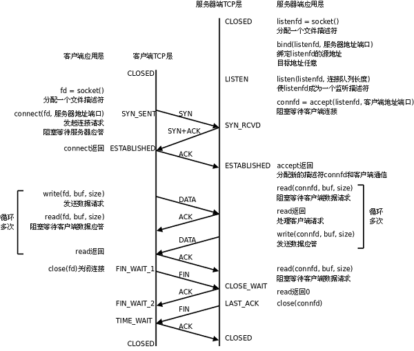
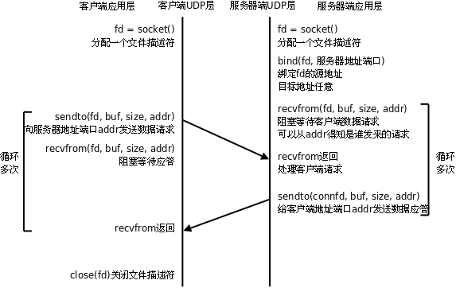

<!DOCTYPE HTML>
<html lang="zh-hans" >
    <head>
        <meta charset="UTF-8">
        <meta content="text/html; charset=utf-8" http-equiv="Content-Type">
        <title>TCP/UDP · robotchaoX</title>
        <meta http-equiv="X-UA-Compatible" content="IE=edge" />
        <meta name="description" content="">
        <meta name="generator" content="GitBook 3.2.3">
        
        
        
    
    <link rel="stylesheet" href="../gitbook/style.css">

    
            
                
                <link rel="stylesheet" href="../gitbook/gitbook-plugin-back-to-top-button/plugin.css">
                
            
                
                <link rel="stylesheet" href="../gitbook/gitbook-plugin-chapter-fold/chapter-fold.css">
                
            
                
                <link rel="stylesheet" href="../gitbook/gitbook-plugin-splitter/splitter.css">
                
            
                
                <link rel="stylesheet" href="../gitbook/gitbook-plugin-anchor-navigation-ex/style/plugin.css">
                
            
                
                <link rel="stylesheet" href="../gitbook/gitbook-plugin-search-pro/search.css">
                
            
                
                <link rel="stylesheet" href="../gitbook/gitbook-plugin-lightbox/css/lightbox.min.css">
                
            
                
                <link rel="stylesheet" href="../gitbook/gitbook-plugin-highlight/website.css">
                
            
                
                <link rel="stylesheet" href="../gitbook/gitbook-plugin-fontsettings/website.css">
                
            
        

    

    
        
    
        
    
        
    
        
    
        
    
        
    

        
    
    
    <meta name="HandheldFriendly" content="true"/>
    <meta name="viewport" content="width=device-width, initial-scale=1, user-scalable=no">
    <meta name="apple-mobile-web-app-capable" content="yes">
    <meta name="apple-mobile-web-app-status-bar-style" content="black">
    <link rel="apple-touch-icon-precomposed" sizes="152x152" href="../gitbook/images/apple-touch-icon-precomposed-152.png">
    <link rel="shortcut icon" href="../gitbook/images/favicon.ico" type="image/x-icon">

    
    <link rel="next" href="duo-jin-cheng-bing-fa.html" />
    
    
    <link rel="prev" href="wang-luo-ji-chu.html" />
    

    </head>
    <body>
        
<div class="book">
    <div class="book-summary">
        
            
<div id="book-search-input" role="search">
    <input type="text" placeholder="输入并搜索" />
</div>

            
                <nav role="navigation">
                


<ul class="summary">
    
    
    
        
        <li>
            <a href="https://github.com/robotchaoX" target="_blank" class="custom-link">GitHub</a>
        </li>
    
    

    
    <li class="divider"></li>
    

    
        
        
    
        <li class="chapter " data-level="1.1" data-path="../">
            
                <a href="../">
            
                    
                    Summary
            
                </a>
            

            
        </li>
    
        <li class="chapter " data-level="1.2" data-path="../c++/">
            
                <a href="../c++/">
            
                    
                    C++
            
                </a>
            

            
            <ul class="articles">
                
    
        <li class="chapter " data-level="1.2.1" data-path="../c++/c++-ji-chu.html">
            
                <a href="../c++/c++-ji-chu.html">
            
                    
                    C++基础
            
                </a>
            

            
        </li>
    
        <li class="chapter " data-level="1.2.2" data-path="../c++/stl.html">
            
                <a href="../c++/stl.html">
            
                    
                    STL
            
                </a>
            

            
        </li>
    

            </ul>
            
        </li>
    
        <li class="chapter " data-level="1.3" data-path="../linux-ji-chu/">
            
                <a href="../linux-ji-chu/">
            
                    
                    linux基础
            
                </a>
            

            
            <ul class="articles">
                
    
        <li class="chapter " data-level="1.3.1" data-path="../linux-ji-chu/linux-command.html">
            
                <a href="../linux-ji-chu/linux-command.html">
            
                    
                    Linux基本命令
            
                </a>
            

            
        </li>
    
        <li class="chapter " data-level="1.3.2" data-path="../linux-ji-chu/gcc.html">
            
                <a href="../linux-ji-chu/gcc.html">
            
                    
                    GCC
            
                </a>
            

            
        </li>
    
        <li class="chapter " data-level="1.3.3" data-path="../linux-ji-chu/gdb.html">
            
                <a href="../linux-ji-chu/gdb.html">
            
                    
                    GDB
            
                </a>
            

            
        </li>
    
        <li class="chapter " data-level="1.3.4" data-path="../linux-ji-chu/make.html">
            
                <a href="../linux-ji-chu/make.html">
            
                    
                    make
            
                </a>
            

            
        </li>
    
        <li class="chapter " data-level="1.3.5" data-path="../linux-ji-chu/json.html">
            
                <a href="../linux-ji-chu/json.html">
            
                    
                    json
            
                </a>
            

            
        </li>
    

            </ul>
            
        </li>
    
        <li class="chapter " data-level="1.4" data-path="../linux-xi-tong-bian-cheng/">
            
                <a href="../linux-xi-tong-bian-cheng/">
            
                    
                    linux系统编程
            
                </a>
            

            
            <ul class="articles">
                
    
        <li class="chapter " data-level="1.4.1" data-path="../linux-xi-tong-bian-cheng/01-process.html">
            
                <a href="../linux-xi-tong-bian-cheng/01-process.html">
            
                    
                    进程
            
                </a>
            

            
        </li>
    
        <li class="chapter " data-level="1.4.2" data-path="../linux-xi-tong-bian-cheng/02-Inter-Process-Communication.html">
            
                <a href="../linux-xi-tong-bian-cheng/02-Inter-Process-Communication.html">
            
                    
                    进程间通信
            
                </a>
            

            
        </li>
    
        <li class="chapter " data-level="1.4.3" data-path="../linux-xi-tong-bian-cheng/04-signal.html">
            
                <a href="../linux-xi-tong-bian-cheng/04-signal.html">
            
                    
                    信号
            
                </a>
            

            
        </li>
    
        <li class="chapter " data-level="1.4.4" data-path="../linux-xi-tong-bian-cheng/05-daemon.html">
            
                <a href="../linux-xi-tong-bian-cheng/05-daemon.html">
            
                    
                    守护进程
            
                </a>
            

            
        </li>
    
        <li class="chapter " data-level="1.4.5" data-path="../linux-xi-tong-bian-cheng/06-thread.html">
            
                <a href="../linux-xi-tong-bian-cheng/06-thread.html">
            
                    
                    线程
            
                </a>
            

            
        </li>
    
        <li class="chapter " data-level="1.4.6" data-path="../linux-xi-tong-bian-cheng/07-thread-synchronization.html">
            
                <a href="../linux-xi-tong-bian-cheng/07-thread-synchronization.html">
            
                    
                    线程同步
            
                </a>
            

            
        </li>
    

            </ul>
            
        </li>
    
        <li class="chapter " data-level="1.5" data-path="./">
            
                <a href="./">
            
                    
                    linux网络编程
            
                </a>
            

            
            <ul class="articles">
                
    
        <li class="chapter " data-level="1.5.1" data-path="wang-luo-ji-chu.html">
            
                <a href="wang-luo-ji-chu.html">
            
                    
                    网络基础
            
                </a>
            

            
        </li>
    
        <li class="chapter active" data-level="1.5.2" data-path="tcp-udp.html">
            
                <a href="tcp-udp.html">
            
                    
                    TCP/UDP
            
                </a>
            

            
        </li>
    
        <li class="chapter " data-level="1.5.3" data-path="duo-jin-cheng-bing-fa.html">
            
                <a href="duo-jin-cheng-bing-fa.html">
            
                    
                    多进程线程并发
            
                </a>
            

            
        </li>
    
        <li class="chapter " data-level="1.5.4" data-path="duo-lu-IO-zhuan-jie.html">
            
                <a href="duo-lu-IO-zhuan-jie.html">
            
                    
                    多路IO转接
            
                </a>
            

            
        </li>
    

            </ul>
            
        </li>
    
        <li class="chapter " data-level="1.6" data-path="../web-fu-wu-qi/">
            
                <a href="../web-fu-wu-qi/">
            
                    
                    Web服务器
            
                </a>
            

            
            <ul class="articles">
                
    
        <li class="chapter " data-level="1.6.1" data-path="../web-fu-wu-qi/untitled.html">
            
                <a href="../web-fu-wu-qi/untitled.html">
            
                    
                    Untitled
            
                </a>
            

            
        </li>
    

            </ul>
            
        </li>
    
        <li class="chapter " data-level="1.7" data-path="../html/">
            
                <a href="../html/">
            
                    
                    HTML
            
                </a>
            

            
            <ul class="articles">
                
    
        <li class="chapter " data-level="1.7.1" data-path="../html/html.html">
            
                <a href="../html/html.html">
            
                    
                    HTML基础
            
                </a>
            

            
        </li>
    

            </ul>
            
        </li>
    
        <li class="chapter " data-level="1.8" data-path="../http/">
            
                <a href="../http/">
            
                    
                    HTTP协议
            
                </a>
            

            
            <ul class="articles">
                
    
        <li class="chapter " data-level="1.8.1" data-path="../http/http.html">
            
                <a href="../http/http.html">
            
                    
                    HTTP基础
            
                </a>
            

            
        </li>
    

            </ul>
            
        </li>
    
        <li class="chapter " data-level="1.9" data-path="../she-ji-mo-shi/">
            
                <a href="../she-ji-mo-shi/">
            
                    
                    设计模式
            
                </a>
            

            
            <ul class="articles">
                
    
        <li class="chapter " data-level="1.9.1" data-path="../she-ji-mo-shi/uml.html">
            
                <a href="../she-ji-mo-shi/uml.html">
            
                    
                    UML
            
                </a>
            

            
        </li>
    
        <li class="chapter " data-level="1.9.2" data-path="../she-ji-mo-shi/she-ji-mo-shi.html">
            
                <a href="../she-ji-mo-shi/she-ji-mo-shi.html">
            
                    
                    设计模式
            
                </a>
            

            
        </li>
    

            </ul>
            
        </li>
    
        <li class="chapter " data-level="1.10" data-path="../shell/">
            
                <a href="../shell/">
            
                    
                    shell编程
            
                </a>
            

            
            <ul class="articles">
                
    
        <li class="chapter " data-level="1.10.1" data-path="../shell/shell.html">
            
                <a href="../shell/shell.html">
            
                    
                    shell基础
            
                </a>
            

            
        </li>
    

            </ul>
            
        </li>
    
        <li class="chapter " data-level="1.11" data-path="../python/">
            
                <a href="../python/">
            
                    
                    Python
            
                </a>
            

            
            <ul class="articles">
                
    
        <li class="chapter " data-level="1.11.1" data-path="../python/python.html">
            
                <a href="../python/python.html">
            
                    
                    Python基础
            
                </a>
            

            
        </li>
    

            </ul>
            
        </li>
    
        <li class="chapter " data-level="1.12" data-path="../vim/">
            
                <a href="../vim/">
            
                    
                    vim编辑器
            
                </a>
            

            
            <ul class="articles">
                
    
        <li class="chapter " data-level="1.12.1" data-path="../vim/vim.html">
            
                <a href="../vim/vim.html">
            
                    
                    vim编辑器
            
                </a>
            

            
        </li>
    

            </ul>
            
        </li>
    
        <li class="chapter " data-level="1.13" data-path="../markdown/">
            
                <a href="../markdown/">
            
                    
                    MarkDown
            
                </a>
            

            
            <ul class="articles">
                
    
        <li class="chapter " data-level="1.13.1" data-path="../markdown/markdown.html">
            
                <a href="../markdown/markdown.html">
            
                    
                    MarkDown笔记
            
                </a>
            

            
        </li>
    

            </ul>
            
        </li>
    
        <li class="chapter " data-level="1.14" data-path="../gitbook/">
            
                <a href="../gitbook/">
            
                    
                    GitBook
            
                </a>
            

            
            <ul class="articles">
                
    
        <li class="chapter " data-level="1.14.1" data-path="../gitbook/gitbook.html">
            
                <a href="../gitbook/gitbook.html">
            
                    
                    GitBook笔记
            
                </a>
            

            
        </li>
    

            </ul>
            
        </li>
    
        <li class="chapter " data-level="1.15" data-path="../git/">
            
                <a href="../git/">
            
                    
                    Git
            
                </a>
            

            
            <ul class="articles">
                
    
        <li class="chapter " data-level="1.15.1" data-path="../git/git.html">
            
                <a href="../git/git.html">
            
                    
                    Git&GitHub
            
                </a>
            

            
        </li>
    

            </ul>
            
        </li>
    
        <li class="chapter " data-level="1.16" data-path="../jetson/">
            
                <a href="../jetson/">
            
                    
                    NVIDIA-jetson
            
                </a>
            

            
            <ul class="articles">
                
    
        <li class="chapter " data-level="1.16.1" data-path="../jetson/jetson.html">
            
                <a href="../jetson/jetson.html">
            
                    
                    jetson笔记
            
                </a>
            

            
        </li>
    

            </ul>
            
        </li>
    
        <li class="chapter " data-level="1.17" data-path="../opencv/">
            
                <a href="../opencv/">
            
                    
                    OpenCV
            
                </a>
            

            
            <ul class="articles">
                
    
        <li class="chapter " data-level="1.17.1" data-path="../opencv/opencv.html">
            
                <a href="../opencv/opencv.html">
            
                    
                    OpenCV笔记
            
                </a>
            

            
        </li>
    

            </ul>
            
        </li>
    
        <li class="chapter " data-level="1.18" data-path="../shu-ju-ku/">
            
                <a href="../shu-ju-ku/">
            
                    
                    数据库
            
                </a>
            

            
            <ul class="articles">
                
    
        <li class="chapter " data-level="1.18.1" data-path="../shu-ju-ku/mysql.html">
            
                <a href="../shu-ju-ku/mysql.html">
            
                    
                    MySQL
            
                </a>
            

            
        </li>
    
        <li class="chapter " data-level="1.18.2" data-path="../shu-ju-ku/mongodb.html">
            
                <a href="../shu-ju-ku/mongodb.html">
            
                    
                    MongoDB
            
                </a>
            

            
        </li>
    

            </ul>
            
        </li>
    

    

    <li class="divider"></li>

    <li>
        <a href="https://www.gitbook.com" target="blank" class="gitbook-link">
            本书使用 GitBook 发布
        </a>
    </li>
</ul>


                </nav>
            
        
    </div>

    <div class="book-body">
        
            <div class="body-inner">
                
                    

<div class="book-header" role="navigation">
    

    <!-- Title -->
    <h1>
        <i class="fa fa-circle-o-notch fa-spin"></i>
        <a href=".." >TCP/UDP</a>
    </h1>
</div>


                    <div class="page-wrapper" tabindex="-1" role="main">
                        <div class="page-inner">
                            
<div id="book-search-results">
    <div class="search-noresults">
    
                                <section class="normal markdown-section">
                                
                                <div id="anchor-navigation-ex-navbar"><i class="fa fa-navicon"></i><ul><li><span class="title-icon "></span><a href="#socket&#x7F16;&#x7A0B;-tcpudp"><b></b>Socket&#x7F16;&#x7A0B; TCP/UDP</a></li><ul><li><span class="title-icon "></span><a href="#&#x9884;&#x5907;&#x77E5;&#x8BC6;"><b></b>&#x9884;&#x5907;&#x77E5;&#x8BC6;</a></li><ul><li><span class="title-icon "></span><a href="#&#x5957;&#x63A5;&#x5B57;&#x6982;&#x5FF5;"><b></b>&#x5957;&#x63A5;&#x5B57;&#x6982;&#x5FF5;</a></li><li><span class="title-icon "></span><a href="#&#x7F51;&#x7EDC;&#x5B57;&#x8282;&#x5E8F;"><b></b>&#x7F51;&#x7EDC;&#x5B57;&#x8282;&#x5E8F;</a></li><li><span class="title-icon "></span><a href="#ip&#x5730;&#x5740;&#x8F6C;&#x6362;&#x51FD;&#x6570;"><b></b>IP&#x5730;&#x5740;&#x8F6C;&#x6362;&#x51FD;&#x6570;</a></li><li><span class="title-icon "></span><a href="#sockaddr&#x6570;&#x636E;&#x7ED3;&#x6784;"><b></b>sockaddr&#x6570;&#x636E;&#x7ED3;&#x6784;</a></li></ul><li><span class="title-icon "></span><a href="#tcp"><b></b>TCP</a></li><ul><li><span class="title-icon "></span><a href="#&#x7F51;&#x7EDC;&#x5957;&#x63A5;&#x5B57;&#x51FD;&#x6570;"><b></b>&#x7F51;&#x7EDC;&#x5957;&#x63A5;&#x5B57;&#x51FD;&#x6570;</a></li><li><span class="title-icon "></span><a href="#cs&#x6A21;&#x578B;-tcp"><b></b>C/S&#x6A21;&#x578B;-TCP</a></li><li><span class="title-icon "></span><a href="#&#x51FA;&#x9519;&#x5904;&#x7406;&#x5C01;&#x88C5;&#x51FD;&#x6570;"><b></b>&#x51FA;&#x9519;&#x5904;&#x7406;&#x5C01;&#x88C5;&#x51FD;&#x6570;</a></li></ul><li><span class="title-icon "></span><a href="#udp&#x670D;&#x52A1;&#x5668;"><b></b>UDP&#x670D;&#x52A1;&#x5668;</a></li><ul><li><span class="title-icon "></span><a href="#cs&#x6A21;&#x578B;-udp"><b></b>C/S&#x6A21;&#x578B;-UDP</a></li><li><span class="title-icon "></span><a href="#&#x591A;&#x64AD;&#x7EC4;&#x64AD;"><b></b>&#x591A;&#x64AD;(&#x7EC4;&#x64AD;)</a></li><li><span class="title-icon "></span><a href="#&#x5176;&#x5B83;&#x5E38;&#x7528;&#x51FD;&#x6570;"><b></b>&#x5176;&#x5B83;&#x5E38;&#x7528;&#x51FD;&#x6570;</a></li></ul><li><span class="title-icon "></span><a href="#socket-ipc"><b></b>socket IPC</a></li><ul><li><span class="title-icon "></span><a href="#server_3"><b></b>server</a></li><li><span class="title-icon "></span><a href="#client_3"><b></b>client</a></li></ul></ul></ul></div><h1 id="socket&#x7F16;&#x7A0B;-tcpudp"><a name="socket&#x7F16;&#x7A0B;-tcpudp" class="anchor-navigation-ex-anchor" href="#socket&#x7F16;&#x7A0B;-tcpudp"><i class="fa fa-link" aria-hidden="true"></i></a>Socket&#x7F16;&#x7A0B; TCP/UDP</h1>
<hr>
<p>[TOC]</p>
<!-- toc -->
<ul>
<li><a href="#%E9%A2%84%E5%A4%87%E7%9F%A5%E8%AF%86">&#x9884;&#x5907;&#x77E5;&#x8BC6;</a><ul>
<li><a href="#%E5%A5%97%E6%8E%A5%E5%AD%97%E6%A6%82%E5%BF%B5">&#x5957;&#x63A5;&#x5B57;&#x6982;&#x5FF5;</a></li>
<li><a href="#%E7%BD%91%E7%BB%9C%E5%AD%97%E8%8A%82%E5%BA%8F">&#x7F51;&#x7EDC;&#x5B57;&#x8282;&#x5E8F;</a></li>
<li><a href="#ip%E5%9C%B0%E5%9D%80%E8%BD%AC%E6%8D%A2%E5%87%BD%E6%95%B0">IP&#x5730;&#x5740;&#x8F6C;&#x6362;&#x51FD;&#x6570;</a></li>
<li><a href="#sockaddr%E6%95%B0%E6%8D%AE%E7%BB%93%E6%9E%84">sockaddr&#x6570;&#x636E;&#x7ED3;&#x6784;</a></li>
</ul>
</li>
<li><a href="#tcp">TCP</a><ul>
<li><a href="#%E7%BD%91%E7%BB%9C%E5%A5%97%E6%8E%A5%E5%AD%97%E5%87%BD%E6%95%B0">&#x7F51;&#x7EDC;&#x5957;&#x63A5;&#x5B57;&#x51FD;&#x6570;</a></li>
<li><a href="#cs%E6%A8%A1%E5%9E%8B-tcp">C/S&#x6A21;&#x578B;-TCP</a></li>
<li><a href="#%E5%87%BA%E9%94%99%E5%A4%84%E7%90%86%E5%B0%81%E8%A3%85%E5%87%BD%E6%95%B0">&#x51FA;&#x9519;&#x5904;&#x7406;&#x5C01;&#x88C5;&#x51FD;&#x6570;</a></li>
</ul>
</li>
<li><a href="#udp%E6%9C%8D%E5%8A%A1%E5%99%A8">UDP&#x670D;&#x52A1;&#x5668;</a><ul>
<li><a href="#cs%E6%A8%A1%E5%9E%8B-udp">C/S&#x6A21;&#x578B;-UDP</a></li>
<li><a href="#%E5%A4%9A%E6%92%AD%E7%BB%84%E6%92%AD">&#x591A;&#x64AD;(&#x7EC4;&#x64AD;)</a></li>
<li><a href="#%E5%85%B6%E5%AE%83%E5%B8%B8%E7%94%A8%E5%87%BD%E6%95%B0">&#x5176;&#x5B83;&#x5E38;&#x7528;&#x51FD;&#x6570;</a></li>
</ul>
</li>
<li><a href="#socket-ipc">socket IPC</a><ul>
<li><a href="#server-3">server</a></li>
<li><a href="#client-3">client</a></li>
</ul>
</li>
</ul>
<!-- tocstop -->
<hr>
<h2 id="&#x9884;&#x5907;&#x77E5;&#x8BC6;"><a name="&#x9884;&#x5907;&#x77E5;&#x8BC6;" class="anchor-navigation-ex-anchor" href="#&#x9884;&#x5907;&#x77E5;&#x8BC6;"><i class="fa fa-link" aria-hidden="true"></i></a>&#x9884;&#x5907;&#x77E5;&#x8BC6;</h2>
<h3 id="&#x5957;&#x63A5;&#x5B57;&#x6982;&#x5FF5;"><a name="&#x5957;&#x63A5;&#x5B57;&#x6982;&#x5FF5;" class="anchor-navigation-ex-anchor" href="#&#x5957;&#x63A5;&#x5B57;&#x6982;&#x5FF5;"><i class="fa fa-link" aria-hidden="true"></i></a>&#x5957;&#x63A5;&#x5B57;&#x6982;&#x5FF5;</h3>
<p>Socket&#x672C;&#x8EAB;&#x6709;&#x201C;&#x63D2;&#x5EA7;&#x201D;&#x7684;&#x610F;&#x601D;&#xFF0C;&#x5728;Linux&#x73AF;&#x5883;&#x4E0B;&#xFF0C;&#x7528;&#x4E8E;&#x8868;&#x793A;&#x8FDB;&#x7A0B;&#x95F4;<strong>&#x7F51;&#x7EDC;&#x901A;&#x4FE1;</strong>&#x7684;&#x7279;&#x6B8A;&#x6587;&#x4EF6;&#x7C7B;&#x578B;&#x3002;<strong>&#x672C;&#x8D28;</strong>&#x4E3A;&#x5185;&#x6838;&#x501F;&#x52A9;&#x7F13;&#x51B2;&#x533A;&#x5F62;&#x6210;&#x7684;<strong>&#x4F2A;&#x6587;&#x4EF6;</strong>&#x3002;</p>
<p>&#x65E2;&#x7136;&#x662F;&#x6587;&#x4EF6;&#xFF0C;&#x90A3;&#x4E48;&#x7406;&#x6240;&#x5F53;&#x7136;&#x7684;&#xFF0C;&#x6211;&#x4EEC;&#x53EF;&#x4EE5;&#x4F7F;&#x7528;&#x6587;&#x4EF6;&#x63CF;&#x8FF0;&#x7B26;&#x5F15;&#x7528;&#x5957;&#x63A5;&#x5B57;&#x3002;&#x4E0E;&#x7BA1;&#x9053;&#x7C7B;&#x4F3C;&#x7684;&#xFF0C;Linux&#x7CFB;&#x7EDF;&#x5C06;&#x5176;&#x5C01;&#x88C5;&#x6210;&#x6587;&#x4EF6;&#x7684;&#x76EE;&#x7684;&#x662F;&#x4E3A;&#x4E86;&#x7EDF;&#x4E00;&#x63A5;&#x53E3;&#xFF0C;&#x4F7F;&#x5F97;&#x8BFB;&#x5199;&#x5957;&#x63A5;&#x5B57;&#x548C;&#x8BFB;&#x5199;&#x6587;&#x4EF6;&#x7684;&#x64CD;&#x4F5C;&#x4E00;&#x81F4;&#x3002;&#x533A;&#x522B;&#x662F;&#x7BA1;&#x9053;&#x4E3B;&#x8981;&#x5E94;&#x7528;&#x4E8E;&#x672C;&#x5730;&#x8FDB;&#x7A0B;&#x95F4;&#x901A;&#x4FE1;&#xFF0C;&#x800C;&#x5957;&#x63A5;&#x5B57;&#x591A;&#x5E94;&#x7528;&#x4E8E;&#x7F51;&#x7EDC;&#x8FDB;&#x7A0B;&#x95F4;&#x6570;&#x636E;&#x7684;&#x4F20;&#x9012;&#x3002;</p>
<p>&#x5957;&#x63A5;&#x5B57;&#x7684;&#x5185;&#x6838;&#x5B9E;&#x73B0;&#x8F83;&#x4E3A;&#x590D;&#x6742;&#xFF0C;&#x4E0D;&#x5B9C;&#x5728;&#x5B66;&#x4E60;&#x521D;&#x671F;&#x6DF1;&#x5165;&#x5B66;&#x4E60;&#x3002;</p>
<p>&#x5728;TCP/IP&#x534F;&#x8BAE;&#x4E2D;&#xFF0C;&#x201C;IP&#x5730;&#x5740;+TCP&#x6216;UDP&#x7AEF;&#x53E3;&#x53F7;&#x201D;&#x552F;&#x4E00;&#x6807;&#x8BC6;&#x7F51;&#x7EDC;&#x901A;&#x8BAF;&#x4E2D;&#x7684;&#x4E00;&#x4E2A;<strong>&#x8FDB;&#x7A0B;</strong>&#x3002;&#x201C;<strong>IP&#x5730;&#x5740;+&#x7AEF;&#x53E3;&#x53F7;</strong>&#x201D;&#x5C31;&#x5BF9;&#x5E94;&#x4E00;&#x4E2A;<strong>socket</strong>&#x3002;&#x6B32;&#x5EFA;&#x7ACB;&#x8FDE;&#x63A5;&#x7684;&#x4E24;&#x4E2A;&#x8FDB;&#x7A0B;&#x5404;&#x81EA;&#x6709;&#x4E00;&#x4E2A;socket&#x6765;&#x6807;&#x8BC6;&#xFF0C;&#x90A3;&#x4E48;&#x8FD9;&#x4E24;&#x4E2A;socket&#x7EC4;&#x6210;&#x7684;socket pair&#x5C31;&#x552F;&#x4E00;&#x6807;&#x8BC6;&#x4E00;&#x4E2A;&#x8FDE;&#x63A5;&#x3002;&#x56E0;&#x6B64;&#x53EF;&#x4EE5;&#x7528;Socket&#x6765;&#x63CF;&#x8FF0;&#x7F51;&#x7EDC;&#x8FDE;&#x63A5;&#x7684;&#x4E00;&#x5BF9;&#x4E00;&#x5173;&#x7CFB;&#x3002;</p>
<p>&#x5957;&#x63A5;&#x5B57;&#x901A;&#x4FE1;&#x539F;&#x7406;&#x5982;&#x4E0B;&#x56FE;&#x6240;&#x793A;&#xFF1A;</p>
<p><a href="assets/1584253606563.png" data-lightbox="9f23d646-dba3-4434-986c-25f035466f16" data-title=""></a></p>
<p>&#x5957;&#x63A5;&#x5B57;&#x901A;&#x8BAF;&#x539F;&#x7406;&#x793A;&#x610F;</p>
<p><strong>&#x5728;&#x7F51;&#x7EDC;&#x901A;&#x4FE1;&#x4E2D;&#xFF0C;&#x5957;&#x63A5;&#x5B57;&#x4E00;&#x5B9A;&#x662F;&#x6210;&#x5BF9;&#x51FA;&#x73B0;&#x7684;&#x3002;</strong>&#x4E00;&#x7AEF;&#x7684;&#x53D1;&#x9001;&#x7F13;&#x51B2;&#x533A;&#x5BF9;&#x5E94;&#x5BF9;&#x7AEF;&#x7684;&#x63A5;&#x6536;&#x7F13;&#x51B2;&#x533A;&#x3002;&#x6211;&#x4EEC;&#x4F7F;&#x7528;&#x540C;&#x4E00;&#x4E2A;&#x6587;&#x4EF6;&#x63CF;&#x8FF0;&#x7B26;&#x7D22;&#x53D1;&#x9001;&#x7F13;&#x51B2;&#x533A;&#x548C;&#x63A5;&#x6536;&#x7F13;&#x51B2;&#x533A;&#x3002;</p>
<p>TCP/IP&#x534F;&#x8BAE;&#x6700;&#x65E9;&#x5728;BSD UNIX&#x4E0A;&#x5B9E;&#x73B0;&#xFF0C;&#x4E3A;<strong>TCP/IP&#x534F;&#x8BAE;</strong>&#x8BBE;&#x8BA1;&#x7684;<strong>&#x5E94;&#x7528;&#x5C42;&#x7F16;&#x7A0B;&#x63A5;&#x53E3;</strong>&#x79F0;&#x4E3A;<strong>socket API</strong>&#x3002;&#x672C;&#x7AE0;&#x7684;&#x4E3B;&#x8981;&#x5185;&#x5BB9;&#x662F;socket API&#xFF0C;&#x4E3B;&#x8981;&#x4ECB;&#x7ECD;TCP&#x534F;&#x8BAE;&#x7684;&#x51FD;&#x6570;&#x63A5;&#x53E3;&#xFF0C;&#x6700;&#x540E;&#x4ECB;&#x7ECD;UDP&#x534F;&#x8BAE;&#x548C;UNIX Domain Socket&#x7684;&#x51FD;&#x6570;&#x63A5;&#x53E3;&#x3002;</p>
<p><a href="assets/1584254327887.png" data-lightbox="c856d995-d202-4864-a711-8b3d16e524c5" data-title="&#x7F51;&#x7EDC;&#x7F16;&#x7A0B;&#x63A5;&#x53E3;"></a></p>
<h3 id="&#x7F51;&#x7EDC;&#x5B57;&#x8282;&#x5E8F;"><a name="&#x7F51;&#x7EDC;&#x5B57;&#x8282;&#x5E8F;" class="anchor-navigation-ex-anchor" href="#&#x7F51;&#x7EDC;&#x5B57;&#x8282;&#x5E8F;"><i class="fa fa-link" aria-hidden="true"></i></a>&#x7F51;&#x7EDC;&#x5B57;&#x8282;&#x5E8F;</h3>
<p>&#x6211;&#x4EEC;&#x5DF2;&#x7ECF;&#x77E5;&#x9053;&#xFF0C;<strong>&#x5185;&#x5B58;</strong>&#x4E2D;&#x7684;&#x591A;&#x5B57;&#x8282;&#x6570;&#x636E;&#x76F8;&#x5BF9;&#x4E8E;&#x5185;&#x5B58;&#x5730;&#x5740;&#x6709;&#x5927;&#x7AEF;&#x548C;&#x5C0F;&#x7AEF;&#x4E4B;&#x5206;&#xFF0C;<strong>&#x78C1;&#x76D8;</strong>&#x6587;&#x4EF6;&#x4E2D;&#x7684;&#x591A;&#x5B57;&#x8282;&#x6570;&#x636E;&#x76F8;&#x5BF9;&#x4E8E;&#x6587;&#x4EF6;&#x4E2D;&#x7684;&#x504F;&#x79FB;&#x5730;&#x5740;&#x4E5F;&#x6709;&#x5927;&#x7AEF;&#x5C0F;&#x7AEF;&#x4E4B;&#x5206;&#x3002;&#x7F51;&#x7EDC;&#x6570;&#x636E;&#x6D41;&#x540C;&#x6837;&#x6709;&#x5927;&#x7AEF;&#x5C0F;&#x7AEF;&#x4E4B;&#x5206;&#xFF0C;&#x90A3;&#x4E48;&#x5982;&#x4F55;&#x5B9A;&#x4E49;&#x7F51;&#x7EDC;&#x6570;&#x636E;&#x6D41;&#x7684;&#x5730;&#x5740;&#x5462;&#xFF1F;&#x53D1;&#x9001;&#x4E3B;&#x673A;&#x901A;&#x5E38;&#x5C06;&#x53D1;&#x9001;&#x7F13;&#x51B2;&#x533A;&#x4E2D;&#x7684;&#x6570;&#x636E;&#x6309;&#x5185;&#x5B58;&#x5730;&#x5740;&#x4ECE;&#x4F4E;&#x5230;&#x9AD8;&#x7684;&#x987A;&#x5E8F;&#x53D1;&#x51FA;&#xFF0C;&#x63A5;&#x6536;&#x4E3B;&#x673A;&#x628A;&#x4ECE;&#x7F51;&#x7EDC;&#x4E0A;&#x63A5;&#x5230;&#x7684;&#x5B57;&#x8282;&#x4F9D;&#x6B21;&#x4FDD;&#x5B58;&#x5728;&#x63A5;&#x6536;&#x7F13;&#x51B2;&#x533A;&#x4E2D;&#xFF0C;&#x4E5F;&#x662F;&#x6309;&#x5185;&#x5B58;&#x5730;&#x5740;&#x4ECE;&#x4F4E;&#x5230;&#x9AD8;&#x7684;&#x987A;&#x5E8F;&#x4FDD;&#x5B58;&#xFF0C;&#x56E0;&#x6B64;&#xFF0C;&#x7F51;&#x7EDC;&#x6570;&#x636E;&#x6D41;&#x7684;&#x5730;&#x5740;&#x5E94;&#x8FD9;&#x6837;&#x89C4;&#x5B9A;&#xFF1A;&#x5148;&#x53D1;&#x51FA;&#x7684;&#x6570;&#x636E;&#x662F;&#x4F4E;&#x5730;&#x5740;&#xFF0C;&#x540E;&#x53D1;&#x51FA;&#x7684;&#x6570;&#x636E;&#x662F;&#x9AD8;&#x5730;&#x5740;&#x3002;</p>
<p><strong>TCP/IP&#x534F;&#x8BAE;</strong>&#x89C4;&#x5B9A;&#xFF0C;<strong>&#x7F51;&#x7EDC;&#x6570;&#x636E;&#x6D41;</strong>&#x5E94;&#x91C7;&#x7528;<strong>&#x5927;&#x7AEF;&#x5B57;&#x8282;&#x5E8F;</strong>&#xFF0C;&#x5373;<strong>&#x4F4E;&#x5730;&#x5740;&#x9AD8;&#x5B57;&#x8282;</strong>&#x3002;&#x4F8B;&#x5982;&#x4E0A;&#x4E00;&#x8282;&#x7684;UDP&#x6BB5;&#x683C;&#x5F0F;&#xFF0C;&#x5730;&#x5740;0-1&#x662F;16&#x4F4D;&#x7684;&#x6E90;&#x7AEF;&#x53E3;&#x53F7;&#xFF0C;&#x5982;&#x679C;&#x8FD9;&#x4E2A;&#x7AEF;&#x53E3;&#x53F7;&#x662F;1000&#xFF08;0x3e8&#xFF09;&#xFF0C;&#x5219;&#x5730;&#x5740;0&#x662F;0x03&#xFF0C;&#x5730;&#x5740;1&#x662F;0xe8&#xFF0C;&#x4E5F;&#x5C31;&#x662F;&#x5148;&#x53D1;0x03&#xFF0C;&#x518D;&#x53D1;0xe8&#xFF0C;&#x8FD9;16&#x4F4D;&#x5728;&#x53D1;&#x9001;&#x4E3B;&#x673A;&#x7684;&#x7F13;&#x51B2;&#x533A;&#x4E2D;&#x4E5F;&#x5E94;&#x8BE5;&#x662F;&#x4F4E;&#x5730;&#x5740;&#x5B58;0x03&#xFF0C;&#x9AD8;&#x5730;&#x5740;&#x5B58;0xe8&#x3002;&#x4F46;&#x662F;&#xFF0C;&#x5982;&#x679C;&#x53D1;&#x9001;&#x4E3B;&#x673A;&#x662F;&#x5C0F;&#x7AEF;&#x5B57;&#x8282;&#x5E8F;&#x7684;&#xFF0C;&#x8FD9;16&#x4F4D;&#x88AB;&#x89E3;&#x91CA;&#x6210;0xe803&#xFF0C;&#x800C;&#x4E0D;&#x662F;1000&#x3002;&#x56E0;&#x6B64;&#xFF0C;&#x53D1;&#x9001;&#x4E3B;&#x673A;&#x628A;1000&#x586B;&#x5230;&#x53D1;&#x9001;&#x7F13;&#x51B2;&#x533A;&#x4E4B;&#x524D;&#x9700;&#x8981;&#x505A;&#x5B57;&#x8282;&#x5E8F;&#x7684;&#x8F6C;&#x6362;&#x3002;&#x540C;&#x6837;&#x5730;&#xFF0C;&#x63A5;&#x6536;&#x4E3B;&#x673A;&#x5982;&#x679C;&#x662F;&#x5C0F;&#x7AEF;&#x5B57;&#x8282;&#x5E8F;&#x7684;&#xFF0C;&#x63A5;&#x5230;16&#x4F4D;&#x7684;&#x6E90;&#x7AEF;&#x53E3;&#x53F7;&#x4E5F;&#x8981;&#x505A;&#x5B57;&#x8282;&#x5E8F;&#x7684;&#x8F6C;&#x6362;&#x3002;&#x5982;&#x679C;&#x4E3B;&#x673A;&#x662F;&#x5927;&#x7AEF;&#x5B57;&#x8282;&#x5E8F;&#x7684;&#xFF0C;&#x53D1;&#x9001;&#x548C;&#x63A5;&#x6536;&#x90FD;&#x4E0D;&#x9700;&#x8981;&#x505A;&#x8F6C;&#x6362;&#x3002;&#x540C;&#x7406;&#xFF0C;32&#x4F4D;&#x7684;IP&#x5730;&#x5740;&#x4E5F;&#x8981;&#x8003;&#x8651;&#x7F51;&#x7EDC;&#x5B57;&#x8282;&#x5E8F;&#x548C;&#x4E3B;&#x673A;&#x5B57;&#x8282;&#x5E8F;&#x7684;&#x95EE;&#x9898;&#x3002;</p>
<p>&#x4E3A;&#x4F7F;&#x7F51;&#x7EDC;&#x7A0B;&#x5E8F;&#x5177;&#x6709;&#x53EF;&#x79FB;&#x690D;&#x6027;&#xFF0C;&#x4F7F;&#x540C;&#x6837;&#x7684;C&#x4EE3;&#x7801;&#x5728;&#x5927;&#x7AEF;&#x548C;&#x5C0F;&#x7AEF;&#x8BA1;&#x7B97;&#x673A;&#x4E0A;&#x7F16;&#x8BD1;&#x540E;&#x90FD;&#x80FD;&#x6B63;&#x5E38;&#x8FD0;&#x884C;&#xFF0C;&#x53EF;&#x4EE5;&#x8C03;&#x7528;&#x4EE5;&#x4E0B;&#x5E93;&#x51FD;&#x6570;&#x505A;<strong>&#x7F51;&#x7EDC;&#x5B57;&#x8282;&#x5E8F;</strong>&#x548C;<strong>&#x4E3B;&#x673A;&#x5B57;&#x8282;&#x5E8F;</strong>&#x7684;&#x8F6C;&#x6362;&#x3002;</p>
<blockquote>
<p>#include &lt;arpa/inet.h&gt;
uint32_t htonl(uint32_t hostlong);
uint16_t htons(uint16_t hostshort);
uint32_t ntohl(uint32_t netlong);
uint16_t ntohs(uint16_t netshort);</p>
</blockquote>
<p><code>h</code>&#x8868;&#x793A;host&#xFF0C;<code>n</code>&#x8868;&#x793A;network&#xFF0C;<code>l</code>&#x8868;&#x793A;32&#x4F4D;&#x957F;&#x6574;&#x6570;&#xFF0C;<code>s</code>&#x8868;&#x793A;16&#x4F4D;&#x77ED;&#x6574;&#x6570;&#x3002;</p>
<p>&#x5982;&#x679C;&#x4E3B;&#x673A;&#x662F;&#x5C0F;&#x7AEF;&#x5B57;&#x8282;&#x5E8F;&#xFF0C;&#x8FD9;&#x4E9B;&#x51FD;&#x6570;&#x5C06;&#x53C2;&#x6570;&#x505A;&#x76F8;&#x5E94;&#x7684;&#x5927;&#x5C0F;&#x7AEF;&#x8F6C;&#x6362;&#x7136;&#x540E;&#x8FD4;&#x56DE;&#xFF0C;&#x5982;&#x679C;&#x4E3B;&#x673A;&#x662F;&#x5927;&#x7AEF;&#x5B57;&#x8282;&#x5E8F;&#xFF0C;&#x8FD9;&#x4E9B;&#x51FD;&#x6570;&#x4E0D;&#x505A;&#x8F6C;&#x6362;&#xFF0C;&#x5C06;&#x53C2;&#x6570;&#x539F;&#x5C01;&#x4E0D;&#x52A8;&#x5730;&#x8FD4;&#x56DE;&#x3002;</p>
<h3 id="ip&#x5730;&#x5740;&#x8F6C;&#x6362;&#x51FD;&#x6570;"><a name="ip&#x5730;&#x5740;&#x8F6C;&#x6362;&#x51FD;&#x6570;" class="anchor-navigation-ex-anchor" href="#ip&#x5730;&#x5740;&#x8F6C;&#x6362;&#x51FD;&#x6570;"><i class="fa fa-link" aria-hidden="true"></i></a>IP&#x5730;&#x5740;&#x8F6C;&#x6362;&#x51FD;&#x6570;</h3>
<p>&#x65E9;&#x671F;&#xFF1A;</p>
<blockquote>
<p>#include &lt;sys/socket.h&gt;
#include &lt;netinet/in.h&gt;
#include &lt;arpa/inet.h&gt;
int inet_aton(const char *cp, struct in_addr *inp);
in_addr_t inet_addr(const char *cp);
char *inet_ntoa(struct in_addr in);</p>
</blockquote>
<p>&#x53EA;&#x80FD;&#x5904;&#x7406;IPv4&#x7684;ip&#x5730;&#x5740;
&#x4E0D;&#x53EF;&#x91CD;&#x5165;&#x51FD;&#x6570;
&#x6CE8;&#x610F;&#x53C2;&#x6570;&#x662F;struct in_addr</p>
<p>&#x73B0;&#x5728;&#xFF1A;</p>
<blockquote>
<p>#include &lt;arpa/inet.h&gt;
int inet_pton(int af, const char *src, void *dst);
const char *inet_ntop(int af, const void *src, char *dst, socklen_t size);
IP&#x5730;&#x5740;&#x8F6C;&#x6362;&#x51FD;&#x6570;,&#x5B57;&#x7B26;&#x4E32;&#x7C7B;&#x578B;&#x8F6C;&#x6362;&#x4E3A;&#x7F51;&#x7EDC;&#x5B57;&#x8282;&#x5E8F;,&#x53C2;3:&#x4F20;&#x51FA;&#x53C2;&#x6570;</p>
</blockquote>
<p>&#x652F;&#x6301;IPv4&#x548C;IPv6
&#x53EF;&#x91CD;&#x5165;&#x51FD;&#x6570;
&#x5176;&#x4E2D;inet_pton&#x548C;inet_ntop&#x4E0D;&#x4EC5;&#x53EF;&#x4EE5;&#x8F6C;&#x6362;IPv4&#x7684;in_addr&#xFF0C;&#x8FD8;&#x53EF;&#x4EE5;&#x8F6C;&#x6362;IPv6&#x7684;in6_addr&#x3002;
&#x56E0;&#x6B64;&#x51FD;&#x6570;&#x63A5;&#x53E3;&#x662F;void *addrptr&#x3002;</p>
<p>&quot;192.168.1.24&quot;&#x5B57;&#x7B26;&#x4E32;  &#x2013;-&gt; unsigned int &#x2014;-&gt; htonl() &#x2014;-&gt; &#x7F51;&#x7EDC;&#x5B57;&#x8282;&#x5E8F;
&#x7F51;&#x7EDC;&#x5B57;&#x8282;&#x5E8F;  &#x2014;-&gt;  ntohl() &#x2014;-&gt; unsigned int &#x2014;-&gt; &quot;192.168.1.24&quot;&#x5B57;&#x7B26;&#x4E32;</p>
<p>&quot;192.168.1.24&quot;&#x5B57;&#x7B26;&#x4E32; ------------------&gt; &#x7F51;&#x7EDC;&#x5B57;&#x8282;&#x5E8F;  inet_pton();
&#x7F51;&#x7EDC;&#x5B57;&#x8282;&#x5E8F; ------------------&gt; &quot;192.168.1.24&quot;&#x5B57;&#x7B26;&#x4E32;  inet_ntop();</p>
<h3 id="sockaddr&#x6570;&#x636E;&#x7ED3;&#x6784;"><a name="sockaddr&#x6570;&#x636E;&#x7ED3;&#x6784;" class="anchor-navigation-ex-anchor" href="#sockaddr&#x6570;&#x636E;&#x7ED3;&#x6784;"><i class="fa fa-link" aria-hidden="true"></i></a>sockaddr&#x6570;&#x636E;&#x7ED3;&#x6784;</h3>
<p>strcut sockaddr &#x5F88;&#x591A;&#x7F51;&#x7EDC;&#x7F16;&#x7A0B;&#x51FD;&#x6570;&#x8BDE;&#x751F;&#x65E9;&#x4E8E;IPv4&#x534F;&#x8BAE;&#xFF0C;&#x90A3;&#x65F6;&#x5019;&#x90FD;&#x4F7F;&#x7528;&#x7684;&#x662F;sockaddr&#x7ED3;&#x6784;&#x4F53;,&#x4E3A;&#x4E86;&#x5411;&#x524D;&#x517C;&#x5BB9;&#xFF0C;&#x73B0;&#x5728;sockaddr&#x9000;&#x5316;&#x6210;&#x4E86;&#xFF08;void *&#xFF09;&#x7684;&#x4F5C;&#x7528;&#xFF0C;&#x4F20;&#x9012;&#x4E00;&#x4E2A;&#x5730;&#x5740;&#x7ED9;&#x51FD;&#x6570;&#xFF0C;&#x81F3;&#x4E8E;&#x8FD9;&#x4E2A;&#x51FD;&#x6570;&#x662F;sockaddr_in&#x8FD8;&#x662F;sockaddr_in6&#xFF0C;&#x7531;&#x5730;&#x5740;&#x65CF;&#x786E;&#x5B9A;&#xFF0C;&#x7136;&#x540E;&#x51FD;&#x6570;&#x5185;&#x90E8;&#x518D;&#x5F3A;&#x5236;&#x7C7B;&#x578B;&#x8F6C;&#x5316;&#x4E3A;&#x6240;&#x9700;&#x7684;&#x5730;&#x5740;&#x7C7B;&#x578B;&#x3002;</p>
<p><a href="assets/1584256086342.png" data-lightbox="1da87260-2dd4-4add-a5fa-cae1a5dc8ccd" data-title=""></a></p>
<p>sockaddr&#x6570;&#x636E;&#x7ED3;&#x6784;</p>
<blockquote>
<p>struct sockaddr {
sa_family_t sa_family; /* address family, AF_xxx */
char sa_data[14]; /* 14 bytes of protocol address */
};</p>
</blockquote>
<p>&#x4F7F;&#x7528;<code>sudo grep -r &quot;struct sockaddr\_in {&quot; /usr</code> &#x547D;&#x4EE4;&#x53EF;&#x67E5;&#x770B;&#x5230;struct sockaddr_in&#x7ED3;&#x6784;&#x4F53;&#x7684;&#x5B9A;&#x4E49;&#x3002;&#x4E00;&#x822C;&#x5176;&#x9ED8;&#x8BA4;&#x7684;&#x5B58;&#x50A8;&#x4F4D;&#x7F6E;&#xFF1A;/usr/include/linux/in.h &#x6587;&#x4EF6;&#x4E2D;&#x3002;</p>
<blockquote>
<p>struct sockaddr_in {
__kernel_sa_family_t sin_family; /* Address family */ &#x5730;&#x5740;&#x7ED3;&#x6784;&#x7C7B;&#x578B;
__be16 sin_port; /* Port number */ &#x7AEF;&#x53E3;&#x53F7;
struct in_addr sin_addr; /* Internet address */ IP&#x5730;&#x5740;
/* Pad to size of `struct sockaddr&apos;. */
unsigned char __pad[__SOCK_SIZE__ - sizeof(short int) -
sizeof(unsigned short int) - sizeof(struct in_addr)];
};</p>
<p>struct in_addr { /* Internet address. */
__be32 s_addr;
};</p>
<p>struct sockaddr_in6 {
unsigned short int sin6_family; /* AF_INET6 */
__be16 sin6_port; /* Transport layer port # */
__be32 sin6_flowinfo; /* IPv6 flow information */
struct in6_addr sin6_addr; /* IPv6 address */
__u32 sin6_scope_id; /* scope id (new in RFC2553) */
};</p>
<p>struct in6_addr {
union {
__u8 u6_addr8[16];
__be16 u6_addr16[8];
__be32 u6_addr32[4];
} in6_u;
#define s6_addr in6_u.u6_addr8
#define s6_addr16 in6_u.u6_addr16
#define s6_addr32 in6_u.u6_addr32
};</p>
<p>struct sockaddr_un {
__kernel_sa_family_t sun_family; /* AF_UNIX */
char sun_path[UNIX_PATH_MAX]; /* pathname */
};</p>
</blockquote>
<p>Pv4&#x548C;IPv6&#x7684;&#x5730;&#x5740;&#x683C;&#x5F0F;&#x5B9A;&#x4E49;&#x5728;<code>netinet/in.h</code>&#x4E2D;&#xFF0C;IPv4&#x5730;&#x5740;&#x7528;<code>sockaddr_in</code>&#x7ED3;&#x6784;&#x4F53;&#x8868;&#x793A;&#xFF0C;&#x5305;&#x62EC;16&#x4F4D;&#x7AEF;&#x53E3;&#x53F7;&#x548C;32&#x4F4D;IP&#x5730;&#x5740;&#xFF0C;IPv6&#x5730;&#x5740;&#x7528;<code>sockaddr_in6</code>&#x7ED3;&#x6784;&#x4F53;&#x8868;&#x793A;&#xFF0C;&#x5305;&#x62EC;16&#x4F4D;&#x7AEF;&#x53E3;&#x53F7;&#x3001;128&#x4F4D;IP&#x5730;&#x5740;&#x548C;&#x4E00;&#x4E9B;&#x63A7;&#x5236;&#x5B57;&#x6BB5;&#x3002;UNIX Domain Socket&#x7684;&#x5730;&#x5740;&#x683C;&#x5F0F;&#x5B9A;&#x4E49;&#x5728;sys/un.h&#x4E2D;&#xFF0C;&#x7528;sock-addr_un&#x7ED3;&#x6784;&#x4F53;&#x8868;&#x793A;&#x3002;&#x5404;&#x79CD;socket&#x5730;&#x5740;&#x7ED3;&#x6784;&#x4F53;&#x7684;&#x5F00;&#x5934;&#x90FD;&#x662F;&#x76F8;&#x540C;&#x7684;&#xFF0C;&#x524D;16&#x4F4D;&#x8868;&#x793A;&#x6574;&#x4E2A;&#x7ED3;&#x6784;&#x4F53;&#x7684;&#x957F;&#x5EA6;&#xFF08;&#x5E76;&#x4E0D;&#x662F;&#x6240;&#x6709;UNIX&#x7684;&#x5B9E;&#x73B0;&#x90FD;&#x6709;&#x957F;&#x5EA6;&#x5B57;&#x6BB5;&#xFF0C;&#x5982;Linux&#x5C31;&#x6CA1;&#x6709;&#xFF09;&#xFF0C;&#x540E;16&#x4F4D;&#x8868;&#x793A;&#x5730;&#x5740;&#x7C7B;&#x578B;&#x3002;IPv4&#x3001;IPv6&#x548C;Unix Domain Socket&#x7684;&#x5730;&#x5740;&#x7C7B;&#x578B;&#x5206;&#x522B;&#x5B9A;&#x4E49;&#x4E3A;&#x5E38;&#x6570;AF_INET&#x3001;AF_INET6&#x3001;AF_UNIX&#x3002;&#x8FD9;&#x6837;&#xFF0C;&#x53EA;&#x8981;&#x53D6;&#x5F97;&#x67D0;&#x79CD;sockaddr&#x7ED3;&#x6784;&#x4F53;&#x7684;&#x9996;&#x5730;&#x5740;&#xFF0C;&#x4E0D;&#x9700;&#x8981;&#x77E5;&#x9053;&#x5177;&#x4F53;&#x662F;&#x54EA;&#x79CD;&#x7C7B;&#x578B;&#x7684;sockaddr&#x7ED3;&#x6784;&#x4F53;&#xFF0C;&#x5C31;&#x53EF;&#x4EE5;&#x6839;&#x636E;&#x5730;&#x5740;&#x7C7B;&#x578B;&#x5B57;&#x6BB5;&#x786E;&#x5B9A;&#x7ED3;&#x6784;&#x4F53;&#x4E2D;&#x7684;&#x5185;&#x5BB9;&#x3002;&#x56E0;&#x6B64;&#xFF0C;socket API&#x53EF;&#x4EE5;&#x63A5;&#x53D7;&#x5404;&#x79CD;&#x7C7B;&#x578B;&#x7684;sockaddr&#x7ED3;&#x6784;&#x4F53;&#x6307;&#x9488;&#x505A;&#x53C2;&#x6570;&#xFF0C;&#x4F8B;&#x5982;bind&#x3001;accept&#x3001;connect&#x7B49;&#x51FD;&#x6570;&#xFF0C;&#x8FD9;&#x4E9B;&#x51FD;&#x6570;&#x7684;&#x53C2;&#x6570;&#x5E94;&#x8BE5;&#x8BBE;&#x8BA1;&#x6210;void *&#x7C7B;&#x578B;&#x4EE5;&#x4FBF;&#x63A5;&#x53D7;&#x5404;&#x79CD;&#x7C7B;&#x578B;&#x7684;&#x6307;&#x9488;&#xFF0C;&#x4F46;&#x662F;sock API&#x7684;&#x5B9E;&#x73B0;&#x65E9;&#x4E8E;ANSI C&#x6807;&#x51C6;&#x5316;&#xFF0C;&#x90A3;&#x65F6;&#x8FD8;&#x6CA1;&#x6709;void *&#x7C7B;&#x578B;&#xFF0C;&#x56E0;&#x6B64;&#x8FD9;&#x4E9B;&#x51FD;&#x6570;&#x7684;&#x53C2;&#x6570;&#x90FD;&#x7528;struct sockaddr *&#x7C7B;&#x578B;&#x8868;&#x793A;&#xFF0C;&#x5728;&#x4F20;&#x9012;&#x53C2;&#x6570;&#x4E4B;&#x524D;&#x8981;&#x5F3A;&#x5236;&#x7C7B;&#x578B;&#x8F6C;&#x6362;&#x4E00;&#x4E0B;&#xFF0C;&#x4F8B;&#x5982;&#xFF1A;</p>
<blockquote>
<p>struct sockaddr_in servaddr;
bind(listen_fd, (struct sockaddr *)&amp;servaddr, sizeof(servaddr)); /* initialize servaddr */</p>
</blockquote>
<h2 id="tcp"><a name="tcp" class="anchor-navigation-ex-anchor" href="#tcp"><i class="fa fa-link" aria-hidden="true"></i></a>TCP</h2>
<p>socket&#x6A21;&#x578B;&#x521B;&#x5EFA;&#x6D41;&#x7A0B;&#x56FE;</p>
<p><a href="assets/1584259036072.png" data-lightbox="9164b117-ccee-4131-9475-a81c718ee4df" data-title="socket API"></a></p>
<h3 id="&#x7F51;&#x7EDC;&#x5957;&#x63A5;&#x5B57;&#x51FD;&#x6570;"><a name="&#x7F51;&#x7EDC;&#x5957;&#x63A5;&#x5B57;&#x51FD;&#x6570;" class="anchor-navigation-ex-anchor" href="#&#x7F51;&#x7EDC;&#x5957;&#x63A5;&#x5B57;&#x51FD;&#x6570;"><i class="fa fa-link" aria-hidden="true"></i></a>&#x7F51;&#x7EDC;&#x5957;&#x63A5;&#x5B57;&#x51FD;&#x6570;</h3>
<h4 id="socket&#x51FD;&#x6570;"><a name="socket&#x51FD;&#x6570;" class="anchor-navigation-ex-anchor" href="#socket&#x51FD;&#x6570;"><i class="fa fa-link" aria-hidden="true"></i></a>socket&#x51FD;&#x6570;</h4>
<p>socket&#x5957;&#x63A5;&#x5B57;&#x6253;&#x5F00;&#x4E00;&#x4E2A;&#x7F51;&#x7EDC;&#x901A;&#x8BAF;&#x7AEF;&#x53E3;</p>
<blockquote>
<p>#include &lt;sys/types.h&gt; 
#include &lt;sys/socket.h&gt;
int socket(int domain, int type, int protocol);
&#x6210;&#x529F;&#xFF1A;&#x8FD4;&#x56DE;&#x6307;&#x5411;&#x65B0;&#x521B;&#x5EFA;&#x7684;socket&#x7684;&#x6587;&#x4EF6;&#x63CF;&#x8FF0;&#x7B26;&#xFF0C;
&#x5931;&#x8D25;&#xFF1A;&#x8FD4;&#x56DE;-1&#xFF0C;&#x8BBE;&#x7F6E;errno</p>
</blockquote>
<p>&#x53C2;&#x6570;&#xFF1A;</p>
<p>domain:
AF_INET &#x8FD9;&#x662F;&#x5927;&#x591A;&#x6570;&#x7528;&#x6765;&#x4EA7;&#x751F;socket&#x7684;&#x534F;&#x8BAE;&#xFF0C;&#x4F7F;&#x7528;TCP&#x6216;UDP&#x6765;&#x4F20;&#x8F93;&#xFF0C;&#x7528;IPv4&#x7684;&#x5730;&#x5740;
AF_INET6 &#x4E0E;&#x4E0A;&#x9762;&#x7C7B;&#x4F3C;&#xFF0C;&#x4E0D;&#x8FC7;&#x662F;&#x6765;&#x7528;IPv6&#x7684;&#x5730;&#x5740;
AF_UNIX &#x672C;&#x5730;&#x534F;&#x8BAE;&#xFF0C;&#x4F7F;&#x7528;&#x5728;Unix&#x548C;Linux&#x7CFB;&#x7EDF;&#x4E0A;&#xFF0C;&#x4E00;&#x822C;&#x90FD;&#x662F;&#x5F53;&#x5BA2;&#x6237;&#x7AEF;&#x548C;&#x670D;&#x52A1;&#x5668;&#x5728;&#x540C;&#x4E00;&#x53F0;&#x53CA;&#x5176;&#x4E0A;&#x7684;&#x65F6;&#x5019;&#x4F7F;&#x7528;</p>
<p>type:
<code>SOCK_STREAM</code> &#x8FD9;&#x4E2A;&#x534F;&#x8BAE;&#x662F;&#x6309;&#x7167;&#x987A;&#x5E8F;&#x7684;&#x3001;&#x53EF;&#x9760;&#x7684;&#x3001;&#x6570;&#x636E;&#x5B8C;&#x6574;&#x7684;&#x57FA;&#x4E8E;&#x5B57;&#x8282;&#x6D41;&#x7684;&#x8FDE;&#x63A5;&#x3002;&#x8FD9;&#x662F;&#x4E00;&#x4E2A;&#x4F7F;&#x7528;&#x6700;&#x591A;&#x7684;socket&#x7C7B;&#x578B;&#xFF0C;&#x8FD9;&#x4E2A;socket&#x662F;&#x4F7F;&#x7528;<strong>TCP</strong>&#x6765;&#x8FDB;&#x884C;&#x4F20;&#x8F93;&#x3002;
<code>SOCK_DGRAM</code> &#x8FD9;&#x4E2A;&#x534F;&#x8BAE;&#x662F;&#x65E0;&#x8FDE;&#x63A5;&#x7684;&#x3001;&#x56FA;&#x5B9A;&#x957F;&#x5EA6;&#x7684;&#x4F20;&#x8F93;&#x8C03;&#x7528;&#x3002;&#x8BE5;&#x534F;&#x8BAE;&#x662F;&#x4E0D;&#x53EF;&#x9760;&#x7684;&#xFF0C;&#x4F7F;&#x7528;<strong>UDP</strong>&#x6765;&#x8FDB;&#x884C;&#x5B83;&#x7684;&#x8FDE;&#x63A5;&#x3002;
SOCK_SEQPACKET &#x8BE5;&#x534F;&#x8BAE;&#x662F;&#x53CC;&#x7EBF;&#x8DEF;&#x7684;&#x3001;&#x53EF;&#x9760;&#x7684;&#x8FDE;&#x63A5;&#xFF0C;&#x53D1;&#x9001;&#x56FA;&#x5B9A;&#x957F;&#x5EA6;&#x7684;&#x6570;&#x636E;&#x5305;&#x8FDB;&#x884C;&#x4F20;&#x8F93;&#x3002;&#x5FC5;&#x987B;&#x628A;&#x8FD9;&#x4E2A;&#x5305;&#x5B8C;&#x6574;&#x7684;&#x63A5;&#x53D7;&#x624D;&#x80FD;&#x8FDB;&#x884C;&#x8BFB;&#x53D6;&#x3002;
SOCK_RAW socket&#x7C7B;&#x578B;&#x63D0;&#x4F9B;&#x5355;&#x4E00;&#x7684;&#x7F51;&#x7EDC;&#x8BBF;&#x95EE;&#xFF0C;&#x8FD9;&#x4E2A;socket&#x7C7B;&#x578B;&#x4F7F;&#x7528;ICMP&#x516C;&#x5171;&#x534F;&#x8BAE;&#x3002;&#xFF08;ping&#x3001;traceroute&#x4F7F;&#x7528;&#x8BE5;&#x534F;&#x8BAE;&#xFF09;
SOCK_RDM &#x8FD9;&#x4E2A;&#x7C7B;&#x578B;&#x662F;&#x5F88;&#x5C11;&#x4F7F;&#x7528;&#x7684;&#xFF0C;&#x5728;&#x5927;&#x90E8;&#x5206;&#x7684;&#x64CD;&#x4F5C;&#x7CFB;&#x7EDF;&#x4E0A;&#x6CA1;&#x6709;&#x5B9E;&#x73B0;&#xFF0C;&#x5B83;&#x662F;&#x63D0;&#x4F9B;&#x7ED9;&#x6570;&#x636E;&#x94FE;&#x8DEF;&#x5C42;&#x4F7F;&#x7528;&#xFF0C;&#x4E0D;&#x4FDD;&#x8BC1;&#x6570;&#x636E;&#x5305;&#x7684;&#x987A;&#x5E8F;</p>
<p>protocol:
&#x4F20;0 &#x8868;&#x793A;&#x4F7F;&#x7528;&#x9ED8;&#x8BA4;&#x534F;&#x8BAE;&#x3002;</p>
<p>socket()&#x6253;&#x5F00;&#x4E00;&#x4E2A;&#x7F51;&#x7EDC;&#x901A;&#x8BAF;&#x7AEF;&#x53E3;&#xFF0C;&#x5982;&#x679C;&#x6210;&#x529F;&#x7684;&#x8BDD;&#xFF0C;&#x5C31;&#x50CF;open()&#x4E00;&#x6837;&#x8FD4;&#x56DE;&#x4E00;&#x4E2A;&#x6587;&#x4EF6;&#x63CF;&#x8FF0;&#x7B26;&#xFF0C;&#x5E94;&#x7528;&#x7A0B;&#x5E8F;&#x53EF;&#x4EE5;&#x50CF;&#x8BFB;&#x5199;&#x6587;&#x4EF6;&#x4E00;&#x6837;&#x7528;read/write&#x5728;&#x7F51;&#x7EDC;&#x4E0A;&#x6536;&#x53D1;&#x6570;&#x636E;&#xFF0C;&#x5982;&#x679C;socket()&#x8C03;&#x7528;&#x51FA;&#x9519;&#x5219;&#x8FD4;&#x56DE;-1&#x3002;&#x5BF9;&#x4E8E;IPv4&#xFF0C;domain&#x53C2;&#x6570;&#x6307;&#x5B9A;&#x4E3A;AF_INET&#x3002;&#x5BF9;&#x4E8E;TCP&#x534F;&#x8BAE;&#xFF0C;type&#x53C2;&#x6570;&#x6307;&#x5B9A;&#x4E3A;SOCK_STREAM&#xFF0C;&#x8868;&#x793A;&#x9762;&#x5411;&#x6D41;&#x7684;&#x4F20;&#x8F93;&#x534F;&#x8BAE;&#x3002;&#x5982;&#x679C;&#x662F;UDP&#x534F;&#x8BAE;&#xFF0C;&#x5219;type&#x53C2;&#x6570;&#x6307;&#x5B9A;&#x4E3A;SOCK_DGRAM&#xFF0C;&#x8868;&#x793A;&#x9762;&#x5411;&#x6570;&#x636E;&#x62A5;&#x7684;&#x4F20;&#x8F93;&#x534F;&#x8BAE;&#x3002;protocol&#x53C2;&#x6570;&#x7684;&#x4ECB;&#x7ECD;&#x4ECE;&#x7565;&#xFF0C;&#x6307;&#x5B9A;&#x4E3A;0&#x5373;&#x53EF;&#x3002;</p>
<h4 id="bind&#x51FD;&#x6570;"><a name="bind&#x51FD;&#x6570;" class="anchor-navigation-ex-anchor" href="#bind&#x51FD;&#x6570;"><i class="fa fa-link" aria-hidden="true"></i></a>bind&#x51FD;&#x6570;</h4>
<p>bind&#x7ED1;&#x5B9A;IP&#x5730;&#x5740;&#x548C;&#x7AEF;&#x53E3;&#x53F7;</p>
<blockquote>
<p>#include &lt;sys/types.h&gt;<br>#include &lt;sys/socket.h&gt;
int bind(int sockfd, const struct sockaddr *addr, socklen_t addrlen);
&#x6210;&#x529F;&#xFF1A;&#x8FD4;&#x56DE;0&#xFF0C;
&#x5931;&#x8D25;&#xFF1A;&#x8FD4;&#x56DE;-1, &#x8BBE;&#x7F6E;errno</p>
</blockquote>
<p>&#x53C2;&#x6570;&#xFF1A;
sockfd&#xFF1A;
socket&#x6587;&#x4EF6;&#x63CF;&#x8FF0;&#x7B26;</p>
<p>addr:
&#x6784;&#x9020;&#x51FA;IP&#x5730;&#x5740;+&#x7AEF;&#x53E3;&#x53F7;</p>
<p>addrlen:
sizeof(addr)&#x957F;&#x5EA6;</p>
<p>&#x670D;&#x52A1;&#x5668;&#x7A0B;&#x5E8F;&#x6240;&#x76D1;&#x542C;&#x7684;&#x7F51;&#x7EDC;&#x5730;&#x5740;&#x548C;&#x7AEF;&#x53E3;&#x53F7;&#x901A;&#x5E38;&#x662F;&#x56FA;&#x5B9A;&#x4E0D;&#x53D8;&#x7684;&#xFF0C;&#x5BA2;&#x6237;&#x7AEF;&#x7A0B;&#x5E8F;&#x5F97;&#x77E5;&#x670D;&#x52A1;&#x5668;&#x7A0B;&#x5E8F;&#x7684;&#x5730;&#x5740;&#x548C;&#x7AEF;&#x53E3;&#x53F7;&#x540E;&#x5C31;&#x53EF;&#x4EE5;&#x5411;&#x670D;&#x52A1;&#x5668;&#x53D1;&#x8D77;&#x8FDE;&#x63A5;&#xFF0C;&#x56E0;&#x6B64;<strong>&#x670D;&#x52A1;&#x5668;</strong>&#x9700;&#x8981;&#x8C03;&#x7528;<strong>bind&#x7ED1;&#x5B9A;</strong>&#x4E00;&#x4E2A;&#x56FA;&#x5B9A;&#x7684;<strong>&#x7F51;&#x7EDC;&#x5730;&#x5740;</strong>&#x548C;<strong>&#x7AEF;&#x53E3;&#x53F7;</strong>&#x3002;</p>
<p>bind()&#x7684;&#x4F5C;&#x7528;&#x662F;&#x5C06;&#x53C2;&#x6570;sockfd&#x548C;addr&#x7ED1;&#x5B9A;&#x5728;&#x4E00;&#x8D77;&#xFF0C;&#x4F7F;sockfd&#x8FD9;&#x4E2A;&#x7528;&#x4E8E;&#x7F51;&#x7EDC;&#x901A;&#x8BAF;&#x7684;&#x6587;&#x4EF6;&#x63CF;&#x8FF0;&#x7B26;&#x76D1;&#x542C;addr&#x6240;&#x63CF;&#x8FF0;&#x7684;&#x5730;&#x5740;&#x548C;&#x7AEF;&#x53E3;&#x53F7;&#x3002;&#x524D;&#x9762;&#x8BB2;&#x8FC7;&#xFF0C;struct sockaddr *&#x662F;&#x4E00;&#x4E2A;&#x901A;&#x7528;&#x6307;&#x9488;&#x7C7B;&#x578B;&#xFF0C;addr&#x53C2;&#x6570;&#x5B9E;&#x9645;&#x4E0A;&#x53EF;&#x4EE5;&#x63A5;&#x53D7;&#x591A;&#x79CD;&#x534F;&#x8BAE;&#x7684;sockaddr&#x7ED3;&#x6784;&#x4F53;&#xFF0C;&#x800C;&#x5B83;&#x4EEC;&#x7684;&#x957F;&#x5EA6;&#x5404;&#x4E0D;&#x76F8;&#x540C;&#xFF0C;&#x6240;&#x4EE5;&#x9700;&#x8981;&#x7B2C;&#x4E09;&#x4E2A;&#x53C2;&#x6570;addrlen&#x6307;&#x5B9A;&#x7ED3;&#x6784;&#x4F53;&#x7684;&#x957F;&#x5EA6;&#x3002;&#x5982;&#xFF1A;</p>
<blockquote>
<p>struct sockaddr_in servaddr;
bzero(&amp;servaddr, sizeof(servaddr));
servaddr.sin_family = AF_INET;
servaddr.sin_addr.s_addr = htonl(INADDR_ANY);
servaddr.sin_port = htons(6666);</p>
</blockquote>
<p>&#x9996;&#x5148;&#x5C06;&#x6574;&#x4E2A;&#x7ED3;&#x6784;&#x4F53;&#x6E05;&#x96F6;&#xFF0C;&#x7136;&#x540E;&#x8BBE;&#x7F6E;&#x5730;&#x5740;&#x7C7B;&#x578B;&#x4E3A;AF_INET&#xFF0C;&#x7F51;&#x7EDC;&#x5730;&#x5740;&#x4E3A;<strong>INADDR_ANY</strong>&#xFF0C;&#x8FD9;&#x4E2A;&#x5B8F;&#x8868;&#x793A;<strong>&#x672C;&#x5730;&#x7684;&#x4EFB;&#x610F;IP&#x5730;&#x5740;</strong>&#xFF0C;&#x56E0;&#x4E3A;&#x670D;&#x52A1;&#x5668;&#x53EF;&#x80FD;&#x6709;&#x591A;&#x4E2A;&#x7F51;&#x5361;&#xFF0C;&#x6BCF;&#x4E2A;&#x7F51;&#x5361;&#x4E5F;&#x53EF;&#x80FD;&#x7ED1;&#x5B9A;&#x591A;&#x4E2A;IP&#x5730;&#x5740;&#xFF0C;&#x8FD9;&#x6837;&#x8BBE;&#x7F6E;&#x53EF;&#x4EE5;&#x5728;&#x6240;&#x6709;&#x7684;IP&#x5730;&#x5740;&#x4E0A;&#x76D1;&#x542C;&#xFF0C;&#x76F4;&#x5230;&#x4E0E;&#x67D0;&#x4E2A;&#x5BA2;&#x6237;&#x7AEF;&#x5EFA;&#x7ACB;&#x4E86;&#x8FDE;&#x63A5;&#x65F6;&#x624D;&#x786E;&#x5B9A;&#x4E0B;&#x6765;&#x5230;&#x5E95;&#x7528;&#x54EA;&#x4E2A;IP&#x5730;&#x5740;&#xFF0C;&#x7AEF;&#x53E3;&#x53F7;&#x4E3A;6666&#x3002;</p>
<h4 id="listen&#x51FD;&#x6570;"><a name="listen&#x51FD;&#x6570;" class="anchor-navigation-ex-anchor" href="#listen&#x51FD;&#x6570;"><i class="fa fa-link" aria-hidden="true"></i></a>listen&#x51FD;&#x6570;</h4>
<p>listen&#x76D1;&#x542C;socket&#x72B6;&#x6001;</p>
<blockquote>
<p>#include &lt;sys/types.h&gt; /* See NOTES */
#include &lt;sys/socket.h&gt;
int listen(int sockfd, int backlog);</p>
</blockquote>
<p>sockfd:
socket&#x6587;&#x4EF6;&#x63CF;&#x8FF0;&#x7B26;</p>
<p>backlog:
&#x6392;&#x961F;&#x5EFA;&#x7ACB;3&#x6B21;&#x63E1;&#x624B;&#x961F;&#x5217;&#x548C;&#x521A;&#x521A;&#x5EFA;&#x7ACB;3&#x6B21;&#x63E1;&#x624B;&#x961F;&#x5217;&#x7684;&#x94FE;&#x63A5;&#x6570;&#x603B;&#x548C;</p>
<p>&#x67E5;&#x770B;&#x7CFB;&#x7EDF;&#x9ED8;&#x8BA4;backlog</p>
<pre><code>cat /proc/sys/net/ipv4/tcp_max_syn_backlog
# 2048
</code></pre><p>&#x5178;&#x578B;&#x7684;&#x670D;&#x52A1;&#x5668;&#x7A0B;&#x5E8F;&#x53EF;&#x4EE5;&#x540C;&#x65F6;&#x670D;&#x52A1;&#x4E8E;&#x591A;&#x4E2A;&#x5BA2;&#x6237;&#x7AEF;&#xFF0C;&#x5F53;&#x6709;&#x5BA2;&#x6237;&#x7AEF;&#x53D1;&#x8D77;&#x8FDE;&#x63A5;&#x65F6;&#xFF0C;&#x670D;&#x52A1;&#x5668;&#x8C03;&#x7528;&#x7684;accept()&#x8FD4;&#x56DE;&#x5E76;&#x63A5;&#x53D7;&#x8FD9;&#x4E2A;&#x8FDE;&#x63A5;&#xFF0C;&#x5982;&#x679C;&#x6709;&#x5927;&#x91CF;&#x7684;&#x5BA2;&#x6237;&#x7AEF;&#x53D1;&#x8D77;&#x8FDE;&#x63A5;&#x800C;&#x670D;&#x52A1;&#x5668;&#x6765;&#x4E0D;&#x53CA;&#x5904;&#x7406;&#xFF0C;&#x5C1A;&#x672A;accept&#x7684;&#x5BA2;&#x6237;&#x7AEF;&#x5C31;&#x5904;&#x4E8E;&#x8FDE;&#x63A5;&#x7B49;&#x5F85;&#x72B6;&#x6001;&#xFF0C;<strong>listen()</strong>&#x58F0;&#x660E;sockfd&#x5904;&#x4E8E;&#x76D1;&#x542C;&#x72B6;&#x6001;&#xFF0C;&#x5E76;&#x4E14;<strong>&#x6700;&#x591A;&#x5141;&#x8BB8;</strong>&#x6709;backlog&#x4E2A;&#x5BA2;&#x6237;&#x7AEF;&#x5904;&#x4E8E;<strong>&#x8FDE;&#x63A5;&#x5F85;&#x72B6;&#x6001;</strong>&#xFF0C;&#x5982;&#x679C;&#x63A5;&#x6536;&#x5230;&#x66F4;&#x591A;&#x7684;&#x8FDE;&#x63A5;&#x8BF7;&#x6C42;&#x5C31;&#x5FFD;&#x7565;&#x3002;listen()&#x6210;&#x529F;&#x8FD4;&#x56DE;0&#xFF0C;&#x5931;&#x8D25;&#x8FD4;&#x56DE;-1&#x3002;</p>
<h4 id="accept&#x51FD;&#x6570;"><a name="accept&#x51FD;&#x6570;" class="anchor-navigation-ex-anchor" href="#accept&#x51FD;&#x6570;"><i class="fa fa-link" aria-hidden="true"></i></a>accept&#x51FD;&#x6570;</h4>
<p>accept&#x63A5;&#x53D7;&#x8FDE;&#x63A5;</p>
<blockquote>
<p>#include &lt;sys/types.h&gt;<br>#include &lt;sys/socket.h&gt;
int accept(int sockfd, struct sockaddr *addr, socklen_t *addrlen);
&#x6210;&#x529F;&#xFF1A;&#x8FD4;&#x56DE;&#x4E00;&#x4E2A;&#x65B0;&#x7684;socket&#x6587;&#x4EF6;&#x63CF;&#x8FF0;&#x7B26;&#xFF0C;&#x7528;&#x4E8E;&#x548C;&#x5BA2;&#x6237;&#x7AEF;&#x901A;&#x4FE1;&#xFF0C;
&#x5931;&#x8D25;&#xFF1A;&#x8FD4;&#x56DE;-1&#xFF0C;&#x8BBE;&#x7F6E;errno</p>
</blockquote>
<p>sockdf:
socket&#x6587;&#x4EF6;&#x63CF;&#x8FF0;&#x7B26;</p>
<p>addr:
&#x4F20;&#x51FA;&#x53C2;&#x6570;&#xFF0C;&#x8FD4;&#x56DE;&#x94FE;&#x63A5;&#x5BA2;&#x6237;&#x7AEF;&#x5730;&#x5740;&#x4FE1;&#x606F;&#xFF0C;&#x542B;IP&#x5730;&#x5740;+&#x7AEF;&#x53E3;&#x53F7;&#x3002;</p>
<p>addrlen:
&#x4F20;&#x5165;&#x4F20;&#x51FA;&#x53C2;&#x6570;&#xFF08;&#x503C;-&#x7ED3;&#x679C;&#xFF09;,&#x4F20;&#x5165;sizeof(addr)&#x5927;&#x5C0F;&#xFF0C;&#x51FD;&#x6570;&#x8FD4;&#x56DE;&#x65F6;&#x8FD4;&#x56DE;&#x771F;&#x6B63;&#x63A5;&#x6536;&#x5230;&#x5730;&#x5740;&#x7ED3;&#x6784;&#x4F53;&#x7684;&#x5927;&#x5C0F;</p>
<p>&#x4E09;&#x6B21;&#x63E1;&#x624B;&#x5B8C;&#x6210;&#x540E;&#xFF0C;&#x670D;&#x52A1;&#x5668;&#x8C03;&#x7528;<strong>accept()&#x63A5;&#x53D7;&#x8FDE;&#x63A5;</strong>&#xFF0C;&#x5982;&#x679C;&#x670D;&#x52A1;&#x5668;&#x8C03;&#x7528;accept()&#x65F6;&#x8FD8;&#x6CA1;&#x6709;&#x5BA2;&#x6237;&#x7AEF;&#x7684;&#x8FDE;&#x63A5;&#x8BF7;&#x6C42;&#xFF0C;&#x5C31;<strong>&#x963B;&#x585E;</strong>&#x7B49;&#x5F85;&#x76F4;&#x5230;&#x6709;&#x5BA2;&#x6237;&#x7AEF;&#x8FDE;&#x63A5;&#x4E0A;&#x6765;&#x3002;addr&#x662F;&#x4E00;&#x4E2A;&#x4F20;&#x51FA;&#x53C2;&#x6570;&#xFF0C;accept()&#x8FD4;&#x56DE;&#x65F6;&#x4F20;&#x51FA;&#x5BA2;&#x6237;&#x7AEF;&#x7684;<strong>ip&#x5730;&#x5740;&#x548C;&#x7AEF;&#x53E3;&#x53F7;</strong>&#x3002;addrlen&#x53C2;&#x6570;&#x662F;&#x4E00;&#x4E2A;&#x4F20;&#x5165;&#x4F20;&#x51FA;&#x53C2;&#x6570;&#xFF08;value-result argument&#xFF09;&#xFF0C;&#x4F20;&#x5165;&#x7684;&#x662F;&#x8C03;&#x7528;&#x8005;&#x63D0;&#x4F9B;&#x7684;&#x7F13;&#x51B2;&#x533A;addr&#x7684;&#x957F;&#x5EA6;&#x4EE5;&#x907F;&#x514D;&#x7F13;&#x51B2;&#x533A;&#x6EA2;&#x51FA;&#x95EE;&#x9898;&#xFF0C;&#x4F20;&#x51FA;&#x7684;&#x662F;&#x5BA2;&#x6237;&#x7AEF;&#x5730;&#x5740;&#x7ED3;&#x6784;&#x4F53;&#x7684;&#x5B9E;&#x9645;&#x957F;&#x5EA6;&#xFF08;&#x6709;&#x53EF;&#x80FD;&#x6CA1;&#x6709;&#x5360;&#x6EE1;&#x8C03;&#x7528;&#x8005;&#x63D0;&#x4F9B;&#x7684;&#x7F13;&#x51B2;&#x533A;&#xFF09;&#x3002;&#x5982;&#x679C;&#x7ED9;addr&#x53C2;&#x6570;&#x4F20;NULL&#xFF0C;&#x8868;&#x793A;&#x4E0D;&#x5173;&#x5FC3;&#x5BA2;&#x6237;&#x7AEF;&#x7684;&#x5730;&#x5740;&#x3002;</p>
<p>&#x6211;&#x4EEC;&#x7684;&#x670D;&#x52A1;&#x5668;&#x7A0B;&#x5E8F;&#x7ED3;&#x6784;&#x662F;&#x8FD9;&#x6837;&#x7684;&#xFF1A;</p>
<p>while (1) {
cliaddr_len = sizeof(cliaddr);
connfd = accept(listenfd, (struct sockaddr *)&amp;cliaddr, &amp;cliaddr_len);
n = read(connfd, buf, MAXLINE);
......
close(connfd);
}</p>
<p>&#x6574;&#x4E2A;&#x662F;&#x4E00;&#x4E2A;while&#x6B7B;&#x5FAA;&#x73AF;&#xFF0C;&#x6BCF;&#x6B21;&#x5FAA;&#x73AF;&#x5904;&#x7406;&#x4E00;&#x4E2A;&#x5BA2;&#x6237;&#x7AEF;&#x8FDE;&#x63A5;&#x3002;&#x7531;&#x4E8E;cliaddr_len&#x662F;&#x4F20;&#x5165;&#x4F20;&#x51FA;&#x53C2;&#x6570;&#xFF0C;&#x6BCF;&#x6B21;&#x8C03;&#x7528;accept()&#x4E4B;&#x524D;&#x5E94;&#x8BE5;&#x91CD;&#x65B0;&#x8D4B;&#x521D;&#x503C;&#x3002;accept()&#x7684;&#x53C2;&#x6570;listenfd&#x662F;&#x5148;&#x524D;&#x7684;&#x76D1;&#x542C;&#x6587;&#x4EF6;&#x63CF;&#x8FF0;&#x7B26;&#xFF0C;&#x800C;accept()&#x7684;&#x8FD4;&#x56DE;&#x503C;&#x662F;&#x53E6;&#x5916;&#x4E00;&#x4E2A;&#x6587;&#x4EF6;&#x63CF;&#x8FF0;&#x7B26;connfd&#xFF0C;&#x4E4B;&#x540E;&#x4E0E;&#x5BA2;&#x6237;&#x7AEF;&#x4E4B;&#x95F4;&#x5C31;&#x901A;&#x8FC7;&#x8FD9;&#x4E2A;connfd&#x901A;&#x8BAF;&#xFF0C;&#x6700;&#x540E;&#x5173;&#x95ED;connfd&#x65AD;&#x5F00;&#x8FDE;&#x63A5;&#xFF0C;&#x800C;&#x4E0D;&#x5173;&#x95ED;listenfd&#xFF0C;&#x518D;&#x6B21;&#x56DE;&#x5230;&#x5FAA;&#x73AF;&#x5F00;&#x5934;listenfd&#x4ECD;&#x7136;&#x7528;&#x4F5C;accept&#x7684;&#x53C2;&#x6570;&#x3002;accept()&#x6210;&#x529F;&#x8FD4;&#x56DE;&#x4E00;&#x4E2A;&#x6587;&#x4EF6;&#x63CF;&#x8FF0;&#x7B26;&#xFF0C;&#x51FA;&#x9519;&#x8FD4;&#x56DE;-1&#x3002;</p>
<h4 id="connect&#x51FD;&#x6570;"><a name="connect&#x51FD;&#x6570;" class="anchor-navigation-ex-anchor" href="#connect&#x51FD;&#x6570;"><i class="fa fa-link" aria-hidden="true"></i></a>connect&#x51FD;&#x6570;</h4>
<p>&#x5BA2;&#x6237;&#x7AEF;&#x9700;&#x8981;&#x8C03;&#x7528;connect()&#x8FDE;&#x63A5;&#x670D;&#x52A1;&#x5668;</p>
<blockquote>
<p>#include &lt;sys/types.h&gt;<br>#include &lt;sys/socket.h&gt;
int connect(int sockfd, const struct sockaddr *addr, socklen_t addrlen);
&#x6210;&#x529F;&#xFF1A;&#x8FD4;&#x56DE;0&#xFF0C;
&#x5931;&#x8D25;&#xFF1A;&#x8FD4;&#x56DE;-1&#xFF0C;&#x8BBE;&#x7F6E;errno</p>
</blockquote>
<p>sockdf:
socket&#x6587;&#x4EF6;&#x63CF;&#x8FF0;&#x7B26;</p>
<p>addr:
&#x4F20;&#x5165;&#x53C2;&#x6570;&#xFF0C;&#x6307;&#x5B9A;&#x670D;&#x52A1;&#x5668;&#x7AEF;&#x5730;&#x5740;&#x4FE1;&#x606F;&#xFF0C;&#x542B;IP&#x5730;&#x5740;&#x548C;&#x7AEF;&#x53E3;&#x53F7;</p>
<p>addrlen:
&#x4F20;&#x5165;&#x53C2;&#x6570;,&#x4F20;&#x5165;sizeof(addr)&#x5927;&#x5C0F;</p>
<p>&#x5BA2;&#x6237;&#x7AEF;&#x9700;&#x8981;&#x8C03;&#x7528;connect()&#x8FDE;&#x63A5;&#x670D;&#x52A1;&#x5668;&#xFF0C;connect&#x548C;bind&#x7684;&#x53C2;&#x6570;&#x5F62;&#x5F0F;&#x4E00;&#x81F4;&#xFF0C;&#x533A;&#x522B;&#x5728;&#x4E8E;bind&#x7684;&#x53C2;&#x6570;&#x662F;&#x81EA;&#x5DF1;&#x7684;&#x5730;&#x5740;&#xFF0C;&#x800C;connect&#x7684;&#x53C2;&#x6570;&#x662F;&#x5BF9;&#x65B9;&#x7684;&#x5730;&#x5740;&#x3002;connect()&#x6210;&#x529F;&#x8FD4;&#x56DE;0&#xFF0C;&#x51FA;&#x9519;&#x8FD4;&#x56DE;-1&#x3002;</p>
<h3 id="cs&#x6A21;&#x578B;-tcp"><a name="cs&#x6A21;&#x578B;-tcp" class="anchor-navigation-ex-anchor" href="#cs&#x6A21;&#x578B;-tcp"><i class="fa fa-link" aria-hidden="true"></i></a>C/S&#x6A21;&#x578B;-TCP</h3>
<p>socket&#x6A21;&#x578B;&#x521B;&#x5EFA;&#x6D41;&#x7A0B;&#x56FE;</p>
<p><a href="assets/1584259036072.png" data-lightbox="8b553b87-8486-404b-b649-8b78df62837d" data-title="socket API"></a></p>
<p>&#x4E0B;&#x56FE;&#x662F;&#x57FA;&#x4E8E;TCP&#x534F;&#x8BAE;&#x7684;&#x5BA2;&#x6237;&#x7AEF;/&#x670D;&#x52A1;&#x5668;&#x7A0B;&#x5E8F;&#x7684;&#x4E00;&#x822C;&#x6D41;&#x7A0B;&#xFF1A;</p>
<p><a href="assets/1584279882850.png" data-lightbox="d246424b-5b0a-4be0-a37f-661d06087a06" data-title=""></a></p>
<p>TCP&#x534F;&#x8BAE;&#x901A;&#x8BAF;&#x6D41;&#x7A0B;</p>
<p><strong>&#x670D;&#x52A1;&#x5668;</strong>&#x8C03;&#x7528;socket()&#x3001;bind()&#x3001;listen()&#x5B8C;&#x6210;&#x521D;&#x59CB;&#x5316;&#x540E;&#xFF0C;&#x8C03;&#x7528;accept()&#x963B;&#x585E;&#x7B49;&#x5F85;&#xFF0C;&#x5904;&#x4E8E;&#x76D1;&#x542C;&#x7AEF;&#x53E3;&#x7684;&#x72B6;&#x6001;&#xFF0C;<strong>&#x5BA2;&#x6237;&#x7AEF;</strong>&#x8C03;&#x7528;socket()&#x521D;&#x59CB;&#x5316;&#x540E;&#xFF0C;&#x8C03;&#x7528;connect()&#x53D1;&#x51FA;SYN&#x6BB5;&#x5E76;&#x963B;&#x585E;&#x7B49;&#x5F85;&#x670D;&#x52A1;&#x5668;&#x5E94;&#x7B54;&#xFF0C;&#x670D;&#x52A1;&#x5668;&#x5E94;&#x7B54;&#x4E00;&#x4E2A;SYN-ACK&#x6BB5;&#xFF0C;&#x5BA2;&#x6237;&#x7AEF;&#x6536;&#x5230;&#x540E;&#x4ECE;connect()&#x8FD4;&#x56DE;&#xFF0C;&#x540C;&#x65F6;&#x5E94;&#x7B54;&#x4E00;&#x4E2A;ACK&#x6BB5;&#xFF0C;&#x670D;&#x52A1;&#x5668;&#x6536;&#x5230;&#x540E;&#x4ECE;accept()&#x8FD4;&#x56DE;&#x3002;</p>
<p>&#x6570;&#x636E;&#x4F20;&#x8F93;&#x7684;&#x8FC7;&#x7A0B;&#xFF1A;</p>
<p>&#x5EFA;&#x7ACB;&#x8FDE;&#x63A5;&#x540E;&#xFF0C;TCP&#x534F;&#x8BAE;&#x63D0;&#x4F9B;<strong>&#x5168;&#x53CC;&#x5DE5;</strong>&#x7684;&#x901A;&#x4FE1;&#x670D;&#x52A1;&#xFF0C;&#x4F46;&#x662F;&#x4E00;&#x822C;&#x7684;&#x5BA2;&#x6237;&#x7AEF;/&#x670D;&#x52A1;&#x5668;&#x7A0B;&#x5E8F;&#x7684;&#x6D41;&#x7A0B;&#x662F;&#x7531;&#x5BA2;&#x6237;&#x7AEF;&#x4E3B;&#x52A8;&#x53D1;&#x8D77;&#x8BF7;&#x6C42;&#xFF0C;&#x670D;&#x52A1;&#x5668;&#x88AB;&#x52A8;&#x5904;&#x7406;&#x8BF7;&#x6C42;&#xFF0C;<strong>&#x4E00;&#x95EE;&#x4E00;&#x7B54;</strong>&#x7684;&#x65B9;&#x5F0F;&#x3002;&#x56E0;&#x6B64;&#xFF0C;&#x670D;&#x52A1;&#x5668;&#x4ECE;accept()&#x8FD4;&#x56DE;&#x540E;&#x7ACB;&#x523B;&#x8C03;&#x7528;read()&#xFF0C;&#x8BFB;socket&#x5C31;&#x50CF;&#x8BFB;&#x7BA1;&#x9053;&#x4E00;&#x6837;&#xFF0C;&#x5982;&#x679C;&#x6CA1;&#x6709;&#x6570;&#x636E;&#x5230;&#x8FBE;&#x5C31;&#x963B;&#x585E;&#x7B49;&#x5F85;&#xFF0C;&#x8FD9;&#x65F6;&#x5BA2;&#x6237;&#x7AEF;&#x8C03;&#x7528;write()&#x53D1;&#x9001;&#x8BF7;&#x6C42;&#x7ED9;&#x670D;&#x52A1;&#x5668;&#xFF0C;&#x670D;&#x52A1;&#x5668;&#x6536;&#x5230;&#x540E;&#x4ECE;read()&#x8FD4;&#x56DE;&#xFF0C;&#x5BF9;&#x5BA2;&#x6237;&#x7AEF;&#x7684;&#x8BF7;&#x6C42;&#x8FDB;&#x884C;&#x5904;&#x7406;&#xFF0C;&#x5728;&#x6B64;&#x671F;&#x95F4;&#x5BA2;&#x6237;&#x7AEF;&#x8C03;&#x7528;read()&#x963B;&#x585E;&#x7B49;&#x5F85;&#x670D;&#x52A1;&#x5668;&#x7684;&#x5E94;&#x7B54;&#xFF0C;&#x670D;&#x52A1;&#x5668;&#x8C03;&#x7528;write()&#x5C06;&#x5904;&#x7406;&#x7ED3;&#x679C;&#x53D1;&#x56DE;&#x7ED9;&#x5BA2;&#x6237;&#x7AEF;&#xFF0C;&#x518D;&#x6B21;&#x8C03;&#x7528;read()&#x963B;&#x585E;&#x7B49;&#x5F85;&#x4E0B;&#x4E00;&#x6761;&#x8BF7;&#x6C42;&#xFF0C;&#x5BA2;&#x6237;&#x7AEF;&#x6536;&#x5230;&#x540E;&#x4ECE;read()&#x8FD4;&#x56DE;&#xFF0C;&#x53D1;&#x9001;&#x4E0B;&#x4E00;&#x6761;&#x8BF7;&#x6C42;&#xFF0C;&#x5982;&#x6B64;&#x5FAA;&#x73AF;&#x4E0B;&#x53BB;&#x3002;</p>
<p>&#x5982;&#x679C;&#x5BA2;&#x6237;&#x7AEF;&#x6CA1;&#x6709;&#x66F4;&#x591A;&#x7684;&#x8BF7;&#x6C42;&#x4E86;&#xFF0C;&#x5C31;&#x8C03;&#x7528;close()&#x5173;&#x95ED;&#x8FDE;&#x63A5;&#xFF0C;&#x5C31;&#x50CF;&#x5199;&#x7AEF;&#x5173;&#x95ED;&#x7684;&#x7BA1;&#x9053;&#x4E00;&#x6837;&#xFF0C;&#x670D;&#x52A1;&#x5668;&#x7684;read()&#x8FD4;&#x56DE;0&#xFF0C;&#x8FD9;&#x6837;&#x670D;&#x52A1;&#x5668;&#x5C31;&#x77E5;&#x9053;&#x5BA2;&#x6237;&#x7AEF;&#x5173;&#x95ED;&#x4E86;&#x8FDE;&#x63A5;&#xFF0C;&#x4E5F;&#x8C03;&#x7528;close()&#x5173;&#x95ED;&#x8FDE;&#x63A5;&#x3002;&#x6CE8;&#x610F;&#xFF0C;&#x4EFB;&#x4F55;&#x4E00;&#x65B9;&#x8C03;&#x7528;<strong>close()</strong>&#x540E;&#xFF0C;&#x8FDE;&#x63A5;&#x7684;&#x4E24;&#x4E2A;&#x4F20;&#x8F93;&#x65B9;&#x5411;<strong>&#x90FD;&#x5173;&#x95ED;</strong>&#xFF0C;&#x4E0D;&#x80FD;&#x518D;&#x53D1;&#x9001;&#x6570;&#x636E;&#x4E86;&#x3002;&#x5982;&#x679C;&#x4E00;&#x65B9;&#x8C03;&#x7528;<strong>shutdown()</strong>&#x5219;&#x8FDE;&#x63A5;&#x5904;&#x4E8E;<strong>&#x534A;&#x5173;&#x95ED;</strong>&#x72B6;&#x6001;&#xFF0C;&#x4ECD;&#x53EF;&#x63A5;&#x6536;&#x5BF9;&#x65B9;&#x53D1;&#x6765;&#x7684;&#x6570;&#x636E;&#x3002;</p>
<p>&#x5728;&#x5B66;&#x4E60;socket API&#x65F6;&#x8981;&#x6CE8;&#x610F;&#x5E94;&#x7528;&#x7A0B;&#x5E8F;&#x548C;TCP&#x534F;&#x8BAE;&#x5C42;&#x662F;&#x5982;&#x4F55;&#x4EA4;&#x4E92;&#x7684;&#xFF1A; &#x5E94;&#x7528;&#x7A0B;&#x5E8F;&#x8C03;&#x7528;&#x67D0;&#x4E2A;socket&#x51FD;&#x6570;&#x65F6;TCP&#x534F;&#x8BAE;&#x5C42;&#x5B8C;&#x6210;&#x4EC0;&#x4E48;&#x52A8;&#x4F5C;&#xFF0C;&#x6BD4;&#x5982;&#x8C03;&#x7528;connect()&#x4F1A;&#x53D1;&#x51FA;SYN&#x6BB5; &#x5E94;&#x7528;&#x7A0B;&#x5E8F;&#x5982;&#x4F55;&#x77E5;&#x9053;TCP&#x534F;&#x8BAE;&#x5C42;&#x7684;&#x72B6;&#x6001;&#x53D8;&#x5316;&#xFF0C;&#x6BD4;&#x5982;&#x4ECE;&#x67D0;&#x4E2A;&#x963B;&#x585E;&#x7684;socket&#x51FD;&#x6570;&#x8FD4;&#x56DE;&#x5C31;&#x8868;&#x660E;TCP&#x534F;&#x8BAE;&#x6536;&#x5230;&#x4E86;&#x67D0;&#x4E9B;&#x6BB5;&#xFF0C;&#x518D;&#x6BD4;&#x5982;read()&#x8FD4;&#x56DE;0&#x5C31;&#x8868;&#x660E;&#x6536;&#x5230;&#x4E86;FIN&#x6BB5;</p>
<h4 id="server"><a name="server" class="anchor-navigation-ex-anchor" href="#server"><i class="fa fa-link" aria-hidden="true"></i></a>server</h4>
<p>&#x4E0B;&#x9762;&#x901A;&#x8FC7;&#x6700;&#x7B80;&#x5355;&#x7684;&#x5BA2;&#x6237;&#x7AEF;/&#x670D;&#x52A1;&#x5668;&#x7A0B;&#x5E8F;&#x7684;&#x5B9E;&#x4F8B;&#x6765;&#x5B66;&#x4E60;socket API&#x3002;</p>
<p>server.c&#x7684;&#x4F5C;&#x7528;&#x662F;&#x4ECE;&#x5BA2;&#x6237;&#x7AEF;&#x8BFB;&#x5B57;&#x7B26;&#xFF0C;&#x7136;&#x540E;&#x5C06;&#x6BCF;&#x4E2A;&#x5B57;&#x7B26;&#x8F6C;&#x6362;&#x4E3A;&#x5927;&#x5199;&#x5E76;&#x56DE;&#x9001;&#x7ED9;&#x5BA2;&#x6237;&#x7AEF;&#x3002;</p>
<blockquote>
<pre><code>#include &lt;stdio.h&gt;
#include &lt;stdlib.h&gt;
#include &lt;string.h&gt;
#include &lt;unistd.h&gt;
#include &lt;sys/socket.h&gt;
#include &lt;netinet/in.h&gt;
#include &lt;arpa/inet.h&gt;

#define MAXLINE 80
#define SERV_PORT 6666

int main(void){
    struct sockaddr_in servaddr, cliaddr;
    socklen_t cliaddr_len;
    int listenfd, connfd;
    char buf[MAXLINE];
    char str[INET_ADDRSTRLEN];
    int i, n;

    listenfd = socket(AF_INET, SOCK_STREAM, 0);

    bzero(&amp;servaddr, sizeof(servaddr));
    servaddr.sin_family = AF_INET;
    servaddr.sin_addr.s_addr = htonl(INADDR_ANY);
    servaddr.sin_port = htons(SERV_PORT);

    bind(listenfd, (struct sockaddr *)&amp;servaddr, sizeof(servaddr));
    listen(listenfd, 20);

    printf(&quot;Accepting connections ...\n&quot;);
    while (1) {
        cliaddr_len = sizeof(cliaddr);
        connfd = accept(listenfd, (struct sockaddr *)&amp;cliaddr, &amp;cliaddr_len);
        n = read(connfd, buf, MAXLINE);
        printf(&quot;received from %s at PORT %d\n&quot;,
        inet_ntop(AF_INET, &amp;cliaddr.sin_addr, str, sizeof(str)),
        ntohs(cliaddr.sin_port));
        for (i = 0; i &lt; n; i++)
            buf[i] = toupper(buf[i]);
        write(connfd, buf, n);
        close(connfd);
    }
    return 0;
}
</code></pre></blockquote>
<h4 id="client"><a name="client" class="anchor-navigation-ex-anchor" href="#client"><i class="fa fa-link" aria-hidden="true"></i></a>client</h4>
<p>client.c&#x7684;&#x4F5C;&#x7528;&#x662F;&#x4ECE;&#x547D;&#x4EE4;&#x884C;&#x53C2;&#x6570;&#x4E2D;&#x83B7;&#x5F97;&#x4E00;&#x4E2A;&#x5B57;&#x7B26;&#x4E32;&#x53D1;&#x7ED9;&#x670D;&#x52A1;&#x5668;&#xFF0C;&#x7136;&#x540E;&#x63A5;&#x6536;&#x670D;&#x52A1;&#x5668;&#x8FD4;&#x56DE;&#x7684;&#x5B57;&#x7B26;&#x4E32;&#x5E76;&#x6253;&#x5370;&#x3002;</p>
<blockquote>
<pre><code>#include &lt;stdio.h&gt;
#include &lt;stdlib.h&gt;
#include &lt;string.h&gt;
#include &lt;unistd.h&gt;
#include &lt;sys/socket.h&gt;
#include &lt;netinet/in.h&gt;

#define MAXLINE 80
#define SERV_PORT 6666

int main(int argc, char *argv[]){
    struct sockaddr_in servaddr;
    char buf[MAXLINE];
    int sockfd, n;
    char *str;

    if (argc != 2) {
        fputs(&quot;usage: ./client message\n&quot;, stderr);
        exit(1);
    }
    str = argv[1];

    sockfd = socket(AF_INET, SOCK_STREAM, 0);

    bzero(&amp;servaddr, sizeof(servaddr));
    servaddr.sin_family = AF_INET;
    inet_pton(AF_INET, &quot;127.0.0.1&quot;, &amp;servaddr.sin_addr);
    servaddr.sin_port = htons(SERV_PORT);

    connect(sockfd, (struct sockaddr *)&amp;servaddr, sizeof(servaddr));

    write(sockfd, str, strlen(str));

    n = read(sockfd, buf, MAXLINE);
    printf(&quot;Response from server:\n&quot;);
    write(STDOUT_FILENO, buf, n);
    close(sockfd);

    return 0;
}
</code></pre></blockquote>
<p>&#x7531;&#x4E8E;&#x5BA2;&#x6237;&#x7AEF;&#x4E0D;&#x9700;&#x8981;&#x56FA;&#x5B9A;&#x7684;&#x7AEF;&#x53E3;&#x53F7;&#xFF0C;&#x56E0;&#x6B64;&#x4E0D;&#x5FC5;&#x8C03;&#x7528;bind()&#xFF0C;&#x5BA2;&#x6237;&#x7AEF;&#x7684;&#x7AEF;&#x53E3;&#x53F7;&#x7531;&#x5185;&#x6838;&#x81EA;&#x52A8;&#x5206;&#x914D;&#x3002;&#x6CE8;&#x610F;&#xFF0C;&#x5BA2;&#x6237;&#x7AEF;&#x4E0D;&#x662F;&#x4E0D;&#x5141;&#x8BB8;&#x8C03;&#x7528;bind()&#xFF0C;&#x53EA;&#x662F;&#x6CA1;&#x6709;&#x5FC5;&#x8981;&#x8C03;&#x7528;bind()&#x56FA;&#x5B9A;&#x4E00;&#x4E2A;&#x7AEF;&#x53E3;&#x53F7;&#xFF0C;&#x670D;&#x52A1;&#x5668;&#x4E5F;&#x4E0D;&#x662F;&#x5FC5;&#x987B;&#x8C03;&#x7528;bind()&#xFF0C;&#x4F46;&#x5982;&#x679C;&#x670D;&#x52A1;&#x5668;&#x4E0D;&#x8C03;&#x7528;bind()&#xFF0C;&#x5185;&#x6838;&#x4F1A;&#x81EA;&#x52A8;&#x7ED9;&#x670D;&#x52A1;&#x5668;&#x5206;&#x914D;&#x76D1;&#x542C;&#x7AEF;&#x53E3;&#xFF0C;&#x6BCF;&#x6B21;&#x542F;&#x52A8;&#x670D;&#x52A1;&#x5668;&#x65F6;&#x7AEF;&#x53E3;&#x53F7;&#x90FD;&#x4E0D;&#x4E00;&#x6837;&#xFF0C;&#x5BA2;&#x6237;&#x7AEF;&#x8981;&#x8FDE;&#x63A5;&#x670D;&#x52A1;&#x5668;&#x5C31;&#x4F1A;&#x9047;&#x5230;&#x9EBB;&#x70E6;&#x3002;</p>
<p>&#x5BA2;&#x6237;&#x7AEF;&#x548C;&#x670D;&#x52A1;&#x5668;&#x542F;&#x52A8;&#x540E;&#x53EF;&#x4EE5;&#x4F7F;&#x7528;netstat&#x547D;&#x4EE4;&#x67E5;&#x770B;&#x94FE;&#x63A5;&#x60C5;&#x51B5;&#xFF1A;</p>
<pre><code>netstat -apn | grep 6666
</code></pre><p>nc(netcat)&#x8FDE;&#x63A5;&#x670D;&#x52A1;&#x5668;</p>
<p><strong>nc &#x5E38;&#x7528;&#xFF1A;</strong></p>
<ul>
<li>&#x4FA6;&#x542C;&#x4EFB;&#x610F;&#x7AEF;&#x53E3;&#xFF0C;&#x4EE5;TCP/UDP &#x65B9;&#x5F0F;</li>
<li>&#x7AEF;&#x53E3;&#x626B;&#x63CF;</li>
<li>&#x4F20;&#x8F93;&#x6587;&#x4EF6;</li>
<li>&#x6D4B;&#x901F;</li>
</ul>
<p><strong>&#x5E38;&#x7528;&#x547D;&#x4EE4;&#xFF1A;</strong></p>
<p>1) -l
&#x7528;&#x4E8E;&#x6307;&#x5B9A;nc&#x5C06;&#x5904;&#x4E8E;&#x4FA6;&#x542C;&#x6A21;&#x5F0F;&#x3002;&#x6307;&#x5B9A;&#x8BE5;&#x53C2;&#x6570;&#xFF0C;&#x5219;&#x610F;&#x5473;&#x7740;nc&#x88AB;&#x5F53;&#x4F5C;server&#xFF0C;&#x4FA6;&#x542C;&#x5E76;&#x63A5;&#x53D7;&#x8FDE;&#x63A5;&#xFF0C;&#x800C;&#x975E;&#x5411;&#x5176;&#x5B83;&#x5730;&#x5740;&#x53D1;&#x8D77;&#x8FDE;&#x63A5;&#x3002;
2) -p <port>
&#x9650;&#x5236;&#x6570;&#x636E;&#x53D1;&#x9001;&#x539F;&#x7AEF;&#x53E3;
3) -s 
&#x6307;&#x5B9A;&#x53D1;&#x9001;&#x6570;&#x636E;&#x7684;&#x6E90;IP&#x5730;&#x5740;&#xFF0C;&#x9002;&#x7528;&#x4E8E;&#x591A;&#x7F51;&#x5361;&#x673A; 
4) -u
 &#x6307;&#x5B9A;nc&#x4F7F;&#x7528;UDP&#x534F;&#x8BAE;&#xFF0C;&#x9ED8;&#x8BA4;&#x4E3A;TCP
5) -v
&#x8F93;&#x51FA;&#x4EA4;&#x4E92;&#x6216;&#x51FA;&#x9519;&#x4FE1;&#x606F;&#xFF0C;&#x65B0;&#x624B;&#x8C03;&#x8BD5;&#x65F6;&#x5C24;&#x4E3A;&#x6709;&#x7528;
6&#xFF09;-w
&#x8D85;&#x65F6;&#x79D2;&#x6570;&#xFF0C;&#x540E;&#x9762;&#x8DDF;&#x6570;&#x5B57; 
7&#xFF09;-z
&#x8868;&#x793A;zero&#xFF0C;&#x8868;&#x793A;&#x626B;&#x63CF;&#x65F6;&#x4E0D;&#x53D1;&#x9001;&#x4EFB;&#x4F55;&#x6570;&#x636E;</port></p>
<pre><code>sudo apt install netcat 
nc 127.0.0.1 8000    # nc &#x8FDE;&#x63A5;&#x670D;&#x52A1;&#x5668;
</code></pre><h3 id="&#x51FA;&#x9519;&#x5904;&#x7406;&#x5C01;&#x88C5;&#x51FD;&#x6570;"><a name="&#x51FA;&#x9519;&#x5904;&#x7406;&#x5C01;&#x88C5;&#x51FD;&#x6570;" class="anchor-navigation-ex-anchor" href="#&#x51FA;&#x9519;&#x5904;&#x7406;&#x5C01;&#x88C5;&#x51FD;&#x6570;"><i class="fa fa-link" aria-hidden="true"></i></a>&#x51FA;&#x9519;&#x5904;&#x7406;&#x5C01;&#x88C5;&#x51FD;&#x6570;</h3>
<p>&#x4E0A;&#x9762;&#x7684;&#x4F8B;&#x5B50;&#x4E0D;&#x4EC5;&#x529F;&#x80FD;&#x7B80;&#x5355;&#xFF0C;&#x800C;&#x4E14;&#x7B80;&#x5355;&#x5230;&#x51E0;&#x4E4E;&#x6CA1;&#x6709;&#x4EC0;&#x4E48;&#x9519;&#x8BEF;&#x5904;&#x7406;&#xFF0C;&#x6211;&#x4EEC;&#x77E5;&#x9053;&#xFF0C;&#x7CFB;&#x7EDF;&#x8C03;&#x7528;&#x4E0D;&#x80FD;&#x4FDD;&#x8BC1;&#x6BCF;&#x6B21;&#x90FD;&#x6210;&#x529F;&#xFF0C;&#x5FC5;&#x987B;&#x8FDB;&#x884C;&#x51FA;&#x9519;&#x5904;&#x7406;&#xFF0C;&#x8FD9;&#x6837;&#x4E00;&#x65B9;&#x9762;&#x53EF;&#x4EE5;&#x4FDD;&#x8BC1;&#x7A0B;&#x5E8F;&#x903B;&#x8F91;&#x6B63;&#x5E38;&#xFF0C;&#x53E6;&#x4E00;&#x65B9;&#x9762;&#x53EF;&#x4EE5;&#x8FC5;&#x901F;&#x5F97;&#x5230;&#x6545;&#x969C;&#x4FE1;&#x606F;&#x3002;</p>
<p>&#x4E3A;&#x4F7F;&#x9519;&#x8BEF;&#x5904;&#x7406;&#x7684;&#x4EE3;&#x7801;&#x4E0D;&#x5F71;&#x54CD;&#x4E3B;&#x7A0B;&#x5E8F;&#x7684;&#x53EF;&#x8BFB;&#x6027;&#xFF0C;&#x6211;&#x4EEC;&#x628A;&#x4E0E;socket&#x76F8;&#x5173;&#x7684;&#x4E00;&#x4E9B;&#x7CFB;&#x7EDF;&#x51FD;&#x6570;&#x52A0;&#x4E0A;&#x9519;&#x8BEF;&#x5904;&#x7406;&#x4EE3;&#x7801;&#x5305;&#x88C5;&#x6210;&#x65B0;&#x7684;&#x51FD;&#x6570;&#xFF0C;&#x505A;&#x6210;&#x4E00;&#x4E2A;&#x6A21;&#x5757;wrap.c&#xFF1A;</p>
<blockquote>
<p>wrap.c</p>
<p>wrap.h</p>
</blockquote>
<h2 id="udp&#x670D;&#x52A1;&#x5668;"><a name="udp&#x670D;&#x52A1;&#x5668;" class="anchor-navigation-ex-anchor" href="#udp&#x670D;&#x52A1;&#x5668;"><i class="fa fa-link" aria-hidden="true"></i></a>UDP&#x670D;&#x52A1;&#x5668;</h2>
<p>&#x4F20;&#x8F93;&#x5C42;&#x4E3B;&#x8981;&#x5E94;&#x7528;&#x7684;&#x534F;&#x8BAE;&#x6A21;&#x578B;&#x6709;&#x4E24;&#x79CD;&#xFF0C;&#x4E00;&#x79CD;&#x662F;TCP&#x534F;&#x8BAE;&#xFF0C;&#x53E6;&#x5916;&#x4E00;&#x79CD;&#x5219;&#x662F;UDP&#x534F;&#x8BAE;&#x3002;TCP&#x534F;&#x8BAE;&#x5728;&#x7F51;&#x7EDC;&#x901A;&#x4FE1;&#x4E2D;&#x5360;&#x4E3B;&#x5BFC;&#x5730;&#x4F4D;&#xFF0C;&#x7EDD;&#x5927;&#x591A;&#x6570;&#x7684;&#x7F51;&#x7EDC;&#x901A;&#x4FE1;&#x501F;&#x52A9;TCP&#x534F;&#x8BAE;&#x5B8C;&#x6210;&#x6570;&#x636E;&#x4F20;&#x8F93;&#x3002;&#x4F46;UDP&#x4E5F;&#x662F;&#x7F51;&#x7EDC;&#x901A;&#x4FE1;&#x4E2D;&#x4E0D;&#x53EF;&#x6216;&#x7F3A;&#x7684;&#x91CD;&#x8981;&#x901A;&#x4FE1;&#x624B;&#x6BB5;&#x3002;</p>
<p>&#x76F8;&#x8F83;&#x4E8E;TCP&#x800C;&#x8A00;&#xFF0C;UDP&#x901A;&#x4FE1;&#x7684;&#x5F62;&#x5F0F;&#x66F4;&#x50CF;&#x662F;&#x53D1;&#x77ED;&#x4FE1;&#x3002;&#x4E0D;&#x9700;&#x8981;&#x5728;&#x6570;&#x636E;&#x4F20;&#x8F93;&#x4E4B;&#x524D;&#x5EFA;&#x7ACB;&#x3001;&#x7EF4;&#x62A4;&#x8FDE;&#x63A5;&#x3002;&#x53EA;&#x4E13;&#x5FC3;&#x83B7;&#x53D6;&#x6570;&#x636E;&#x5C31;&#x597D;&#x3002;&#x7701;&#x53BB;&#x4E86;&#x4E09;&#x6B21;&#x63E1;&#x624B;&#x7684;&#x8FC7;&#x7A0B;&#xFF0C;&#x901A;&#x4FE1;&#x901F;&#x5EA6;&#x53EF;&#x4EE5;&#x5927;&#x5927;&#x63D0;&#x9AD8;&#xFF0C;&#x4F46;&#x4E0E;&#x4E4B;&#x4F34;&#x968F;&#x7684;&#x901A;&#x4FE1;&#x7684;&#x7A33;&#x5B9A;&#x6027;&#x548C;&#x6B63;&#x786E;&#x7387;&#x4FBF;&#x5F97;&#x4E0D;&#x5230;&#x4FDD;&#x8BC1;&#x3002;&#x56E0;&#x6B64;&#xFF0C;&#x6211;&#x4EEC;&#x79F0;UDP&#x4E3A;&#x201C;&#x65E0;&#x8FDE;&#x63A5;&#x7684;&#x4E0D;&#x53EF;&#x9760;&#x62A5;&#x6587;&#x4F20;&#x9012;&#x201D;&#x3002;</p>
<p>&#x90A3;&#x4E48;&#x4E0E;&#x6211;&#x4EEC;&#x719F;&#x77E5;&#x7684;TCP&#x76F8;&#x6BD4;&#xFF0C;UDP&#x6709;&#x54EA;&#x4E9B;&#x4F18;&#x70B9;&#x548C;&#x4E0D;&#x8DB3;&#x5462;&#xFF1F;&#x7531;&#x4E8E;&#x65E0;&#x9700;&#x521B;&#x5EFA;&#x8FDE;&#x63A5;&#xFF0C;&#x6240;&#x4EE5;UDP<strong>&#x5F00;&#x9500;&#x8F83;&#x5C0F;</strong>&#xFF0C;&#x6570;&#x636E;&#x4F20;&#x8F93;<strong>&#x901F;&#x5EA6;&#x5FEB;</strong>&#xFF0C;<strong>&#x5B9E;&#x65F6;&#x6027;&#x8F83;&#x5F3A;</strong>&#x3002;&#x591A;&#x7528;&#x4E8E;&#x5BF9;&#x5B9E;&#x65F6;&#x6027;&#x8981;&#x6C42;&#x8F83;&#x9AD8;&#x7684;&#x901A;&#x4FE1;&#x573A;&#x5408;&#xFF0C;&#x5982;<strong>&#x89C6;&#x9891;&#x4F1A;&#x8BAE;</strong>&#x3001;&#x7535;&#x8BDD;&#x4F1A;&#x8BAE;&#x7B49;&#x3002;&#x4F46;&#x968F;&#x4E4B;&#x4E5F;&#x4F34;&#x968F;&#x7740;&#x6570;&#x636E;&#x4F20;&#x8F93;&#x4E0D;&#x53EF;&#x9760;&#xFF0C;&#x4F20;&#x8F93;&#x6570;&#x636E;&#x7684;&#x6B63;&#x786E;&#x7387;&#x3001;&#x4F20;&#x8F93;&#x987A;&#x5E8F;&#x548C;&#x6D41;&#x91CF;&#x90FD;&#x5F97;&#x4E0D;&#x5230;&#x63A7;&#x5236;&#x548C;&#x4FDD;&#x8BC1;&#x3002;&#x6240;&#x4EE5;&#xFF0C;&#x901A;&#x5E38;&#x60C5;&#x51B5;&#x4E0B;&#xFF0C;&#x4F7F;&#x7528;UDP&#x534F;&#x8BAE;&#x8FDB;&#x884C;&#x6570;&#x636E;&#x4F20;&#x8F93;&#xFF0C;&#x4E3A;&#x4FDD;&#x8BC1;&#x6570;&#x636E;&#x7684;&#x6B63;&#x786E;&#x6027;&#xFF0C;&#x6211;&#x4EEC;&#x9700;&#x8981;&#x5728;<strong>&#x5E94;&#x7528;&#x5C42;</strong>&#x6DFB;&#x52A0;&#x8F85;&#x52A9;<strong>&#x6821;&#x9A8C;</strong>&#x534F;&#x8BAE;&#x6765;&#x5F25;&#x8865;UDP&#x7684;&#x4E0D;&#x8DB3;&#xFF0C;&#x4EE5;&#x8FBE;&#x5230;&#x6570;&#x636E;&#x53EF;&#x9760;&#x4F20;&#x8F93;&#x7684;&#x76EE;&#x7684;&#x3002;</p>
<p>&#x4E0E;TCP&#x7C7B;&#x4F3C;&#x7684;&#xFF0C;UDP&#x4E5F;&#x6709;&#x53EF;&#x80FD;&#x51FA;&#x73B0;&#x7F13;&#x51B2;&#x533A;&#x88AB;&#x586B;&#x6EE1;&#x540E;&#xFF0C;&#x518D;&#x63A5;&#x6536;&#x6570;&#x636E;&#x65F6;&#x4E22;&#x5305;&#x7684;&#x73B0;&#x8C61;&#x3002;&#x7531;&#x4E8E;&#x5B83;&#x6CA1;&#x6709;TCP&#x6ED1;&#x52A8;&#x7A97;&#x53E3;&#x7684;&#x673A;&#x5236;&#xFF0C;&#x901A;&#x5E38;&#x91C7;&#x7528;&#x5982;&#x4E0B;&#x4E24;&#x79CD;&#x65B9;&#x6CD5;&#x89E3;&#x51B3;&#xFF1A;</p>
<p>1)  &#x670D;&#x52A1;&#x5668;<strong>&#x5E94;&#x7528;&#x5C42;</strong>&#x8BBE;&#x8BA1;<strong>&#x6D41;&#x91CF;&#x63A7;&#x5236;</strong>&#xFF0C;&#x63A7;&#x5236;&#x53D1;&#x9001;&#x6570;&#x636E;&#x901F;&#x5EA6;&#x3002;</p>
<p>2)  &#x501F;&#x52A9;setsockopt&#x51FD;&#x6570;<strong>&#x6539;&#x53D8;&#x63A5;&#x6536;&#x7F13;&#x51B2;&#x533A;&#x5927;&#x5C0F;</strong>&#x3002;&#x5982;&#xFF1A;</p>
<blockquote>
<p>#include &lt;sys/socket.h&gt;
int setsockopt(int sockfd, int level, int optname, const void *optval, socklen_t optlen);
int n = 220x1024
setsockopt(sockfd, SOL_SOCKET, SO_RCVBUF, &amp;n, sizeof(n));</p>
</blockquote>
<h3 id="cs&#x6A21;&#x578B;-udp"><a name="cs&#x6A21;&#x578B;-udp" class="anchor-navigation-ex-anchor" href="#cs&#x6A21;&#x578B;-udp"><i class="fa fa-link" aria-hidden="true"></i></a>C/S&#x6A21;&#x578B;-UDP</h3>
<p><a href="assets/1585540962059.png" data-lightbox="386255bc-ef53-4788-b7c0-b07c0efdd5f1" data-title=""></a></p>
<p>UDP&#x5904;&#x7406;&#x6A21;&#x578B;</p>
<p>&#x7531;&#x4E8E;UDP&#x4E0D;&#x9700;&#x8981;&#x7EF4;&#x62A4;&#x8FDE;&#x63A5;&#xFF0C;&#x7A0B;&#x5E8F;&#x903B;&#x8F91;&#x7B80;&#x5355;&#x4E86;&#x5F88;&#x591A;&#xFF0C;&#x4F46;&#x662F;UDP&#x534F;&#x8BAE;&#x662F;&#x4E0D;&#x53EF;&#x9760;&#x7684;&#xFF0C;&#x4FDD;&#x8BC1;&#x901A;&#x8BAF;&#x53EF;&#x9760;&#x6027;&#x7684;&#x673A;&#x5236;&#x9700;&#x8981;&#x5728;&#x5E94;&#x7528;&#x5C42;&#x5B9E;&#x73B0;&#x3002;</p>
<p>&#x7F16;&#x8BD1;&#x8FD0;&#x884C;server&#xFF0C;&#x5728;&#x4E24;&#x4E2A;&#x7EC8;&#x7AEF;&#x91CC;&#x5404;&#x5F00;&#x4E00;&#x4E2A;client&#x4E0E;server&#x4EA4;&#x4E92;&#xFF0C;&#x770B;&#x770B;server&#x662F;&#x5426;&#x5177;&#x6709;&#x5E76;&#x53D1;&#x670D;&#x52A1;&#x7684;&#x80FD;&#x529B;&#x3002;&#x7528;Ctrl+C&#x5173;&#x95ED;server&#xFF0C;&#x7136;&#x540E;&#x518D;&#x8FD0;&#x884C;server&#xFF0C;&#x770B;&#x6B64;&#x65F6;client&#x8FD8;&#x80FD;&#x5426;&#x548C;server&#x8054;&#x7CFB;&#x4E0A;&#x3002;&#x548C;&#x524D;&#x9762;TCP&#x7A0B;&#x5E8F;&#x7684;&#x8FD0;&#x884C;&#x7ED3;&#x679C;&#x76F8;&#x6BD4;&#x8F83;&#xFF0C;&#x4F53;&#x4F1A;&#x65E0;&#x8FDE;&#x63A5;&#x7684;&#x542B;&#x4E49;&#x3002;</p>
<h4 id="server_1"><a name="server_1" class="anchor-navigation-ex-anchor" href="#server_1"><i class="fa fa-link" aria-hidden="true"></i></a>server</h4>
<blockquote>
<pre><code>#include &lt;string.h&gt;
#include &lt;netinet/in.h&gt;
#include &lt;stdio.h&gt;
#include &lt;unistd.h&gt;
#include &lt;strings.h&gt;
#include &lt;arpa/inet.h&gt;
#include &lt;ctype.h&gt;

#define MAXLINE 80
#define SERV_PORT 6666

int main(void){
    struct sockaddr_in servaddr, cliaddr;
    socklen_t cliaddr_len;
    int sockfd;
    char buf[MAXLINE];
    char str[INET_ADDRSTRLEN];
    int i, n;

    sockfd = socket(AF_INET, SOCK_DGRAM, 0);

    bzero(&amp;servaddr, sizeof(servaddr));
    servaddr.sin_family = AF_INET;
    servaddr.sin_addr.s_addr = htonl(INADDR_ANY);
    servaddr.sin_port = htons(SERV_PORT);

    bind(sockfd, (struct sockaddr *)&amp;servaddr, sizeof(servaddr));
    printf(&quot;Accepting connections ...\n&quot;);

    while (1) {
        cliaddr_len = sizeof(cliaddr);
        n = recvfrom(sockfd, buf, MAXLINE,0, (struct sockaddr *)&amp;cliaddr, &amp;cliaddr_len);
        if (n == -1)
            perror(&quot;recvfrom error&quot;);
        printf(&quot;received from %s at PORT %d\n&quot;, 
                inet_ntop(AF_INET, &amp;cliaddr.sin_addr, str, sizeof(str)),
                ntohs(cliaddr.sin_port));
        for (i = 0; i &lt; n; i++)
            buf[i] = toupper(buf[i]);

        n = sendto(sockfd, buf, n, 0, (struct sockaddr *)&amp;cliaddr, sizeof(cliaddr));
        if (n == -1)
            perror(&quot;sendto error&quot;);
    }
    close(sockfd);
    return 0;
}
</code></pre></blockquote>
<h4 id="client_1"><a name="client_1" class="anchor-navigation-ex-anchor" href="#client_1"><i class="fa fa-link" aria-hidden="true"></i></a>client</h4>
<blockquote>
<pre><code>#include &lt;stdio.h&gt;
#include &lt;string.h&gt;
#include &lt;unistd.h&gt;
#include &lt;netinet/in.h&gt;
#include &lt;arpa/inet.h&gt;
#include &lt;strings.h&gt;
#include &lt;ctype.h&gt;

#define MAXLINE 80
#define SERV_PORT 6666

int main(int argc, char *argv[]){
    struct sockaddr_in servaddr;
    int sockfd, n;
    char buf[MAXLINE];

    sockfd = socket(AF_INET, SOCK_DGRAM, 0);

    bzero(&amp;servaddr, sizeof(servaddr));
    servaddr.sin_family = AF_INET;
    inet_pton(AF_INET, &quot;127.0.0.1&quot;, &amp;servaddr.sin_addr);
    servaddr.sin_port = htons(SERV_PORT);

    while (fgets(buf, MAXLINE, stdin) != NULL) {
        n = sendto(sockfd, buf, strlen(buf), 0, (struct sockaddr *)&amp;servaddr, sizeof(servaddr));
        if (n == -1)
            perror(&quot;sendto error&quot;);
        n = recvfrom(sockfd, buf, MAXLINE, 0, NULL, 0);
        if (n == -1)
            perror(&quot;recvfrom error&quot;);
        write(STDOUT_FILENO, buf, n);
    }
    close(sockfd);
    return 0;
}
</code></pre></blockquote>
<h3 id="&#x591A;&#x64AD;&#x7EC4;&#x64AD;"><a name="&#x591A;&#x64AD;&#x7EC4;&#x64AD;" class="anchor-navigation-ex-anchor" href="#&#x591A;&#x64AD;&#x7EC4;&#x64AD;"><i class="fa fa-link" aria-hidden="true"></i></a>&#x591A;&#x64AD;(&#x7EC4;&#x64AD;)</h3>
<p>&#x7EC4;&#x64AD;&#x7EC4;&#x53EF;&#x4EE5;&#x662F;&#x6C38;&#x4E45;&#x7684;&#x4E5F;&#x53EF;&#x4EE5;&#x662F;&#x4E34;&#x65F6;&#x7684;&#x3002;&#x7EC4;&#x64AD;&#x7EC4;&#x5730;&#x5740;&#x4E2D;&#xFF0C;&#x6709;&#x4E00;&#x90E8;&#x5206;&#x7531;&#x5B98;&#x65B9;&#x5206;&#x914D;&#x7684;&#xFF0C;&#x79F0;&#x4E3A;&#x6C38;&#x4E45;&#x7EC4;&#x64AD;&#x7EC4;&#x3002;&#x6C38;&#x4E45;&#x7EC4;&#x64AD;&#x7EC4;&#x4FDD;&#x6301;&#x4E0D;&#x53D8;&#x7684;&#x662F;&#x5B83;&#x7684;ip&#x5730;&#x5740;&#xFF0C;&#x7EC4;&#x4E2D;&#x7684;&#x6210;&#x5458;&#x6784;&#x6210;&#x53EF;&#x4EE5;&#x53D1;&#x751F;&#x53D8;&#x5316;&#x3002;&#x6C38;&#x4E45;&#x7EC4;&#x64AD;&#x7EC4;&#x4E2D;&#x6210;&#x5458;&#x7684;&#x6570;&#x91CF;&#x90FD;&#x53EF;&#x4EE5;&#x662F;&#x4EFB;&#x610F;&#x7684;&#xFF0C;&#x751A;&#x81F3;&#x53EF;&#x4EE5;&#x4E3A;&#x96F6;&#x3002;&#x90A3;&#x4E9B;&#x6CA1;&#x6709;&#x4FDD;&#x7559;&#x4E0B;&#x6765;&#x4F9B;&#x6C38;&#x4E45;&#x7EC4;&#x64AD;&#x7EC4;&#x4F7F;&#x7528;&#x7684;ip&#x7EC4;&#x64AD;&#x5730;&#x5740;&#xFF0C;&#x53EF;&#x4EE5;&#x88AB;&#x4E34;&#x65F6;&#x7EC4;&#x64AD;&#x7EC4;&#x5229;&#x7528;&#x3002;</p>
<p>224.0.0.0&#xFF5E;224.0.0.255 &#x4E3A;&#x9884;&#x7559;&#x7684;&#x7EC4;&#x64AD;&#x5730;&#x5740;&#xFF08;&#x6C38;&#x4E45;&#x7EC4;&#x5730;&#x5740;&#xFF09;&#xFF0C;&#x5730;&#x5740;224.0.0.0&#x4FDD;&#x7559;&#x4E0D;&#x505A;&#x5206;&#x914D;&#xFF0C;&#x5176;&#x5B83;&#x5730;&#x5740;&#x4F9B;&#x8DEF;&#x7531;&#x534F;&#x8BAE;&#x4F7F;&#x7528;&#xFF1B;
224.0.1.0&#xFF5E;224.0.1.255 &#x662F;&#x516C;&#x7528;&#x7EC4;&#x64AD;&#x5730;&#x5740;&#xFF0C;&#x53EF;&#x4EE5;&#x7528;&#x4E8E;Internet&#xFF1B;&#x6B32;&#x4F7F;&#x7528;&#x9700;&#x7533;&#x8BF7;&#x3002;
224.0.2.0&#xFF5E;238.255.255.255 &#x4E3A;&#x7528;&#x6237;&#x53EF;&#x7528;&#x7684;&#x7EC4;&#x64AD;&#x5730;&#x5740;&#xFF08;&#x4E34;&#x65F6;&#x7EC4;&#x5730;&#x5740;&#xFF09;&#xFF0C;&#x5168;&#x7F51;&#x8303;&#x56F4;&#x5185;&#x6709;&#x6548;&#xFF1B;
239.0.0.0&#xFF5E;239.255.255.255 &#x4E3A;&#x672C;&#x5730;&#x7BA1;&#x7406;&#x7EC4;&#x64AD;&#x5730;&#x5740;&#xFF0C;&#x4EC5;&#x5728;&#x7279;&#x5B9A;&#x7684;&#x672C;&#x5730;&#x8303;&#x56F4;&#x5185;&#x6709;&#x6548;&#x3002;</p>
<p>&#x53EF;&#x4F7F;&#x7528;ip ad&#x547D;&#x4EE4;&#x67E5;&#x770B;&#x7F51;&#x5361;&#x7F16;&#x53F7;&#xFF0C;&#x5982;&#xFF1A;</p>
<pre><code>$ ip ad
</code></pre><blockquote>
<p>1: lo: <loopback,up,lower_up> mtu 65536 qdisc noqueue state UNKNOWN group default qlen 1000
    link/loopback 00:00:00:00:00:00 brd 00:00:00:00:00:00
    inet 127.0.0.1/8 scope host lo
       valid_lft forever preferred_lft forever
    inet6 ::1/128 scope host 
       valid_lft forever preferred_lft forever
2: enp1s0: <no-carrier,broadcast,multicast,up> mtu 1500 qdisc pfifo_fast state DOWN group default qlen 1000
    link/ether 2c:60:0c:4a:38:6f brd ff:ff:ff:ff:ff:ff
3: wlx200db0129d50: <broadcast,multicast,up,lower_up> mtu 1500 qdisc mq state UP group default qlen 1000
    link/ether 20:0d:b0:12:9d:50 brd ff:ff:ff:ff:ff:ff
    inet 192.168.1.107/24 brd 192.168.1.255 scope global noprefixroute dynamic wlx200db0129d50
       valid_lft 4428sec preferred_lft 4428sec
    inet6 fe80::27a7:2153:73c6:55cd/64 scope link noprefixroute 
       valid_lft forever preferred_lft forever</broadcast,multicast,up,lower_up></no-carrier,broadcast,multicast,up></loopback,up,lower_up></p>
</blockquote>
<p>if_nametoindex &#x547D;&#x4EE4;&#x53EF;&#x4EE5;&#x6839;&#x636E;&#x7F51;&#x5361;&#x540D;&#xFF0C;&#x83B7;&#x53D6;&#x7F51;&#x5361;&#x5E8F;&#x53F7;&#x3002;</p>
<h4 id="server_2"><a name="server_2" class="anchor-navigation-ex-anchor" href="#server_2"><i class="fa fa-link" aria-hidden="true"></i></a>server</h4>
<h4 id="client_2"><a name="client_2" class="anchor-navigation-ex-anchor" href="#client_2"><i class="fa fa-link" aria-hidden="true"></i></a>client</h4>
<h3 id="&#x5176;&#x5B83;&#x5E38;&#x7528;&#x51FD;&#x6570;"><a name="&#x5176;&#x5B83;&#x5E38;&#x7528;&#x51FD;&#x6570;" class="anchor-navigation-ex-anchor" href="#&#x5176;&#x5B83;&#x5E38;&#x7528;&#x51FD;&#x6570;"><i class="fa fa-link" aria-hidden="true"></i></a>&#x5176;&#x5B83;&#x5E38;&#x7528;&#x51FD;&#x6570;</h3>
<h4 id="&#x540D;&#x5B57;&#x4E0E;&#x5730;&#x5740;&#x8F6C;&#x6362;"><a name="&#x540D;&#x5B57;&#x4E0E;&#x5730;&#x5740;&#x8F6C;&#x6362;" class="anchor-navigation-ex-anchor" href="#&#x540D;&#x5B57;&#x4E0E;&#x5730;&#x5740;&#x8F6C;&#x6362;"><i class="fa fa-link" aria-hidden="true"></i></a>&#x540D;&#x5B57;&#x4E0E;&#x5730;&#x5740;&#x8F6C;&#x6362;</h4>
<p>gethostbyname&#x6839;&#x636E;&#x7ED9;&#x5B9A;&#x7684;&#x4E3B;&#x673A;&#x540D;&#xFF0C;&#x83B7;&#x53D6;&#x4E3B;&#x673A;&#x4FE1;&#x606F;&#x3002;</p>
<p>&#x8FC7;&#x65F6;&#xFF0C;&#x4EC5;&#x7528;&#x4E8E;IPv4&#xFF0C;&#x4E14;&#x7EBF;&#x7A0B;&#x4E0D;&#x5B89;&#x5168;&#x3002;</p>
<p>gethostbyaddr&#x51FD;&#x6570;&#xFF0C;&#x6B64;&#x51FD;&#x6570;&#x53EA;&#x80FD;&#x83B7;&#x53D6;&#x57DF;&#x540D;&#x89E3;&#x6790;&#x670D;&#x52A1;&#x5668;&#x7684;url&#x548C;/etc/hosts&#x91CC;&#x767B;&#x8BB0;&#x7684;IP&#x5BF9;&#x5E94;&#x7684;&#x57DF;&#x540D;&#x3002;</p>
<p>getservbyname</p>
<p>getservbyport</p>
<p>&#x6839;&#x636E;&#x670D;&#x52A1;&#x7A0B;&#x5E8F;&#x540D;&#x5B57;&#x6216;&#x7AEF;&#x53E3;&#x53F7;&#x83B7;&#x53D6;&#x4FE1;&#x606F;&#x3002;&#x4F7F;&#x7528;&#x9891;&#x7387;&#x4E0D;&#x9AD8;&#x3002;</p>
<p>getaddrinfo</p>
<p>getnameinfo</p>
<p>freeaddrinfo</p>
<p>&#x53EF;&#x540C;&#x65F6;&#x5904;&#x7406;IPv4&#x548C;IPv6&#xFF0C;&#x7EBF;&#x7A0B;&#x5B89;&#x5168;&#x7684;&#x3002;</p>
<h4 id="&#x5957;&#x63A5;&#x53E3;&#x548C;&#x5730;&#x5740;&#x5173;&#x8054;"><a name="&#x5957;&#x63A5;&#x53E3;&#x548C;&#x5730;&#x5740;&#x5173;&#x8054;" class="anchor-navigation-ex-anchor" href="#&#x5957;&#x63A5;&#x53E3;&#x548C;&#x5730;&#x5740;&#x5173;&#x8054;"><i class="fa fa-link" aria-hidden="true"></i></a>&#x5957;&#x63A5;&#x53E3;&#x548C;&#x5730;&#x5740;&#x5173;&#x8054;</h4>
<p>getsockname</p>
<p>&#x6839;&#x636E;accpet&#x8FD4;&#x56DE;&#x7684;sockfd&#xFF0C;&#x5F97;&#x5230;&#x4E34;&#x65F6;&#x7AEF;&#x53E3;&#x53F7;</p>
<p>getpeername</p>
<p>&#x6839;&#x636E;accpet&#x8FD4;&#x56DE;&#x7684;sockfd&#xFF0C;&#x5F97;&#x5230;&#x8FDC;&#x7AEF;&#x94FE;&#x63A5;&#x7684;&#x7AEF;&#x53E3;&#x53F7;&#xFF0C;&#x5728;exec&#x540E;&#x53EF;&#x4EE5;&#x83B7;&#x53D6;&#x5BA2;&#x6237;&#x7AEF;&#x4FE1;&#x606F;&#x3002;</p>
<h2 id="socket-ipc"><a name="socket-ipc" class="anchor-navigation-ex-anchor" href="#socket-ipc"><i class="fa fa-link" aria-hidden="true"></i></a>socket IPC</h2>
<p>&#xFF08;&#x672C;&#x5730;&#x5957;&#x63A5;&#x5B57;Domain Socket&#xFF09;</p>
<p>socket API&#x539F;&#x672C;&#x662F;&#x4E3A;&#x7F51;&#x7EDC;&#x901A;&#x8BAF;&#x8BBE;&#x8BA1;&#x7684;&#xFF0C;&#x4F46;&#x540E;&#x6765;&#x5728;socket&#x7684;&#x6846;&#x67B6;&#x4E0A;&#x53D1;&#x5C55;&#x51FA;&#x4E00;&#x79CD;IPC&#x673A;&#x5236;&#xFF0C;&#x5C31;&#x662F;UNIX Domain Socket&#x3002;&#x867D;&#x7136;&#x7F51;&#x7EDC;socket&#x4E5F;&#x53EF;&#x7528;&#x4E8E;&#x540C;&#x4E00;&#x53F0;&#x4E3B;&#x673A;&#x7684;&#x8FDB;&#x7A0B;&#x95F4;&#x901A;&#x8BAF;&#xFF08;&#x901A;&#x8FC7;loopback&#x5730;&#x5740;127.0.0.1&#xFF09;&#xFF0C;&#x4F46;&#x662F;UNIX Domain Socket&#x7528;&#x4E8E;IPC&#x66F4;&#x6709;&#x6548;&#x7387;&#xFF1A;&#x4E0D;&#x9700;&#x8981;&#x7ECF;&#x8FC7;&#x7F51;&#x7EDC;&#x534F;&#x8BAE;&#x6808;&#xFF0C;&#x4E0D;&#x9700;&#x8981;&#x6253;&#x5305;&#x62C6;&#x5305;&#x3001;&#x8BA1;&#x7B97;&#x6821;&#x9A8C;&#x548C;&#x3001;&#x7EF4;&#x62A4;&#x5E8F;&#x53F7;&#x548C;&#x5E94;&#x7B54;&#x7B49;&#xFF0C;&#x53EA;&#x662F;&#x5C06;&#x5E94;&#x7528;&#x5C42;&#x6570;&#x636E;&#x4ECE;&#x4E00;&#x4E2A;&#x8FDB;&#x7A0B;&#x62F7;&#x8D1D;&#x5230;&#x53E6;&#x4E00;&#x4E2A;&#x8FDB;&#x7A0B;&#x3002;&#x8FD9;&#x662F;&#x56E0;&#x4E3A;&#xFF0C;IPC&#x673A;&#x5236;&#x672C;&#x8D28;&#x4E0A;&#x662F;&#x53EF;&#x9760;&#x7684;&#x901A;&#x8BAF;&#xFF0C;&#x800C;&#x7F51;&#x7EDC;&#x534F;&#x8BAE;&#x662F;&#x4E3A;&#x4E0D;&#x53EF;&#x9760;&#x7684;&#x901A;&#x8BAF;&#x8BBE;&#x8BA1;&#x7684;&#x3002;UNIX Domain Socket&#x4E5F;&#x63D0;&#x4F9B;&#x9762;&#x5411;&#x6D41;&#x548C;&#x9762;&#x5411;&#x6570;&#x636E;&#x5305;&#x4E24;&#x79CD;API&#x63A5;&#x53E3;&#xFF0C;&#x7C7B;&#x4F3C;&#x4E8E;TCP&#x548C;UDP&#xFF0C;&#x4F46;&#x662F;&#x9762;&#x5411;&#x6D88;&#x606F;&#x7684;UNIX Domain Socket&#x4E5F;&#x662F;&#x53EF;&#x9760;&#x7684;&#xFF0C;&#x6D88;&#x606F;&#x65E2;&#x4E0D;&#x4F1A;&#x4E22;&#x5931;&#x4E5F;&#x4E0D;&#x4F1A;&#x987A;&#x5E8F;&#x9519;&#x4E71;&#x3002;</p>
<p>UNIX Domain Socket&#x662F;&#x5168;&#x53CC;&#x5DE5;&#x7684;&#xFF0C;API&#x63A5;&#x53E3;&#x8BED;&#x4E49;&#x4E30;&#x5BCC;&#xFF0C;&#x76F8;&#x6BD4;&#x5176;&#x5B83;IPC&#x673A;&#x5236;&#x6709;&#x660E;&#x663E;&#x7684;&#x4F18;&#x8D8A;&#x6027;&#xFF0C;&#x76EE;&#x524D;&#x5DF2;&#x6210;&#x4E3A;&#x4F7F;&#x7528;&#x6700;&#x5E7F;&#x6CDB;&#x7684;IPC&#x673A;&#x5236;&#xFF0C;&#x6BD4;&#x5982;X Window&#x670D;&#x52A1;&#x5668;&#x548C;GUI&#x7A0B;&#x5E8F;&#x4E4B;&#x95F4;&#x5C31;&#x662F;&#x901A;&#x8FC7;UNIX Domain Socket&#x901A;&#x8BAF;&#x7684;&#x3002;</p>
<p>&#x4F7F;&#x7528;UNIX Domain Socket&#x7684;&#x8FC7;&#x7A0B;&#x548C;&#x7F51;&#x7EDC;socket&#x5341;&#x5206;&#x76F8;&#x4F3C;&#xFF0C;&#x4E5F;&#x8981;&#x5148;&#x8C03;&#x7528;socket()&#x521B;&#x5EFA;&#x4E00;&#x4E2A;socket&#x6587;&#x4EF6;&#x63CF;&#x8FF0;&#x7B26;&#xFF0C;address family&#x6307;&#x5B9A;&#x4E3A;AF_UNIX&#xFF0C;type&#x53EF;&#x4EE5;&#x9009;&#x62E9;SOCK_DGRAM&#x6216;SOCK_STREAM&#xFF0C;protocol&#x53C2;&#x6570;&#x4ECD;&#x7136;&#x6307;&#x5B9A;&#x4E3A;0&#x5373;&#x53EF;&#x3002;</p>
<p>UNIX Domain Socket&#x4E0E;&#x7F51;&#x7EDC;socket&#x7F16;&#x7A0B;&#x6700;&#x660E;&#x663E;&#x7684;&#x4E0D;&#x540C;&#x5728;&#x4E8E;&#x5730;&#x5740;&#x683C;&#x5F0F;&#x4E0D;&#x540C;&#xFF0C;&#x7528;&#x7ED3;&#x6784;&#x4F53;sockaddr_un&#x8868;&#x793A;&#xFF0C;<strong>&#x7F51;&#x7EDC;</strong>&#x7F16;&#x7A0B;&#x7684;socket<strong>&#x5730;&#x5740;</strong>&#x662F;<strong>IP&#x5730;&#x5740;+&#x7AEF;&#x53E3;&#x53F7;</strong>&#xFF0C;&#x800C;<strong>&#x672C;&#x5730;&#x5957;&#x63A5;&#x5B57;</strong>UNIX Domain Socket&#x7684;<strong>&#x5730;&#x5740;</strong>&#x662F;&#x4E00;&#x4E2A;<strong>socket&#x7C7B;&#x578B;&#x7684;&#x6587;&#x4EF6;&#x5728;&#x6587;&#x4EF6;&#x7CFB;&#x7EDF;&#x4E2D;&#x7684;&#x8DEF;&#x5F84;</strong>&#xFF0C;&#x8FD9;&#x4E2A;socket&#x6587;&#x4EF6;&#x7531;bind()&#x8C03;&#x7528;&#x521B;&#x5EFA;&#xFF0C;&#x5982;&#x679C;&#x8C03;&#x7528;bind()&#x65F6;&#x8BE5;&#x6587;&#x4EF6;&#x5DF2;&#x5B58;&#x5728;&#xFF0C;&#x5219;bind()&#x9519;&#x8BEF;&#x8FD4;&#x56DE;&#x3002;</p>
<p>&#x5BF9;&#x6BD4;&#x7F51;&#x7EDC;&#x5957;&#x63A5;&#x5B57;&#x5730;&#x5740;&#x7ED3;&#x6784;&#x548C;&#x672C;&#x5730;&#x5957;&#x63A5;&#x5B57;&#x5730;&#x5740;&#x7ED3;&#x6784;&#xFF1A;</p>
<blockquote>
<p>struct sockaddr_in {
__kernel_sa_family_t <strong>sin_family</strong>;     /* Address family */ &#x5730;&#x5740;&#x7ED3;&#x6784;&#x7C7B;&#x578B;
__be16 <strong>sin_port</strong>;     /* Port number */ &#x7AEF;&#x53E3;&#x53F7;
struct in_addr <strong>sin_addr</strong>;     /* Internet address */ IP&#x5730;&#x5740;
};
struct sockaddr_un {
__kernel_sa_family_t <strong>sun_family</strong>;     /* AF_UNIX */ &#x5730;&#x5740;&#x7ED3;&#x6784;&#x7C7B;&#x578B;
char <strong>sun_path</strong>[UNIX_PATH_MAX];     /* pathname */ socket&#x6587;&#x4EF6;&#x540D;(&#x542B;&#x8DEF;&#x5F84;)
};</p>
</blockquote>
<p>&#x4EE5;&#x4E0B;&#x7A0B;&#x5E8F;&#x5C06;UNIX Domain socket&#x7ED1;&#x5B9A;&#x5230;&#x4E00;&#x4E2A;&#x5730;&#x5740;&#x3002;</p>
<blockquote>
<p>size = offsetof(struct sockaddr_un, sun_path) + strlen(un.sun_path);
#define offsetof(type, member) ((int)&amp;((type *)0)-&gt;MEMBER)</p>
</blockquote>
<h3 id="server_3"><a name="server_3" class="anchor-navigation-ex-anchor" href="#server_3"><i class="fa fa-link" aria-hidden="true"></i></a>server</h3>
<h3 id="client_3"><a name="client_3" class="anchor-navigation-ex-anchor" href="#client_3"><i class="fa fa-link" aria-hidden="true"></i></a>client</h3>

                                
                                </section>
                            
    </div>
    <div class="search-results">
        <div class="has-results">
            
            <h1 class="search-results-title"><span class='search-results-count'></span> results matching "<span class='search-query'></span>"</h1>
            <ul class="search-results-list"></ul>
            
        </div>
        <div class="no-results">
            
            <h1 class="search-results-title">No results matching "<span class='search-query'></span>"</h1>
            
        </div>
    </div>
</div>

                        </div>
                    </div>
                
            </div>

            
                
                <a href="wang-luo-ji-chu.html" class="navigation navigation-prev " aria-label="Previous page: 网络基础">
                    <i class="fa fa-angle-left"></i>
                </a>
                
                
                <a href="duo-jin-cheng-bing-fa.html" class="navigation navigation-next " aria-label="Next page: 多进程线程并发">
                    <i class="fa fa-angle-right"></i>
                </a>
                
            
        
    </div>

    <script>
        var gitbook = gitbook || [];
        gitbook.push(function() {
            gitbook.page.hasChanged({"page":{"title":"TCP/UDP","level":"1.5.2","depth":2,"next":{"title":"多进程线程并发","level":"1.5.3","depth":2,"path":"linux-wang-luo-bian-cheng/duo-jin-cheng-bing-fa.md","ref":"linux-wang-luo-bian-cheng/duo-jin-cheng-bing-fa.md","articles":[]},"previous":{"title":"网络基础","level":"1.5.1","depth":2,"path":"linux-wang-luo-bian-cheng/wang-luo-ji-chu.md","ref":"linux-wang-luo-bian-cheng/wang-luo-ji-chu.md","articles":[]},"dir":"ltr"},"config":{"plugins":["todo","back-to-top-button","chapter-fold","splitter","github","anchor-navigation-ex","simple-page-toc","search-pro","-lunr","-search","lightbox"],"styles":{"website":"styles/website.css","pdf":"styles/pdf.css","epub":"styles/epub.css","mobi":"styles/mobi.css","ebook":"styles/ebook.css","print":"styles/print.css"},"pluginsConfig":{"chapter-fold":{},"github":{"url":"https://github.com/robotchaoX/gitbook"},"simple-page-toc":{"maxDepth":3,"skipFirstH1":true},"todo":{},"splitter":{},"search-pro":{},"fontsettings":{"theme":"white","family":"sans","size":2},"highlight":{},"anchor-navigation-ex":{"associatedWithSummary":true,"float":{"floatIcon":"fa fa-navicon","level1Icon":"","level2Icon":"","level3Icon":"","showLevelIcon":false},"mode":"float","multipleH1":true,"pageTop":{"level1Icon":"","level2Icon":"","level3Icon":"","showLevelIcon":false},"printLog":false,"showGoTop":false,"showLevel":false},"lightbox":{"jquery":true,"sameUuid":false},"back-to-top-button":{},"sharing":{"facebook":true,"twitter":true,"google":false,"weibo":false,"instapaper":false,"vk":false,"all":["facebook","google","twitter","weibo","instapaper"]},"theme-default":{"styles":{"website":"styles/website.css","pdf":"styles/pdf.css","epub":"styles/epub.css","mobi":"styles/mobi.css","ebook":"styles/ebook.css","print":"styles/print.css"},"showLevel":false}},"theme":"default","pdf":{"pageNumbers":true,"fontSize":12,"fontFamily":"Arial","paperSize":"a4","chapterMark":"pagebreak","pageBreaksBefore":"/","margin":{"right":62,"left":62,"top":56,"bottom":56}},"structure":{"langs":"LANGS.md","readme":"README.md","glossary":"GLOSSARY.md","summary":"SUMMARY.md"},"variables":{},"title":"robotchaoX","language":"zh-hans","links":{"sidebar":{"GitHub":"https://github.com/robotchaoX"}},"gitbook":"*","description":"gitbook description"},"file":{"path":"linux-wang-luo-bian-cheng/tcp-udp.md","mtime":"2020-03-30T06:01:25.048Z","type":"markdown"},"gitbook":{"version":"3.2.3","time":"2020-03-31T04:05:24.071Z"},"basePath":"..","book":{"language":""}});
        });
    </script>
</div>

        
    <script src="../gitbook/gitbook.js"></script>
    <script src="../gitbook/theme.js"></script>
    
        
        <script src="../gitbook/gitbook-plugin-back-to-top-button/plugin.js"></script>
        
    
        
        <script src="../gitbook/gitbook-plugin-chapter-fold/chapter-fold.js"></script>
        
    
        
        <script src="../gitbook/gitbook-plugin-splitter/splitter.js"></script>
        
    
        
        <script src="../gitbook/gitbook-plugin-github/plugin.js"></script>
        
    
        
        <script src="../gitbook/gitbook-plugin-search-pro/jquery.mark.min.js"></script>
        
    
        
        <script src="../gitbook/gitbook-plugin-search-pro/search.js"></script>
        
    
        
        <script src="../gitbook/gitbook-plugin-lightbox/js/lightbox.min.js"></script>
        
    
        
        <script src="../gitbook/gitbook-plugin-sharing/buttons.js"></script>
        
    
        
        <script src="../gitbook/gitbook-plugin-fontsettings/fontsettings.js"></script>
        
    

    </body>
</html>

